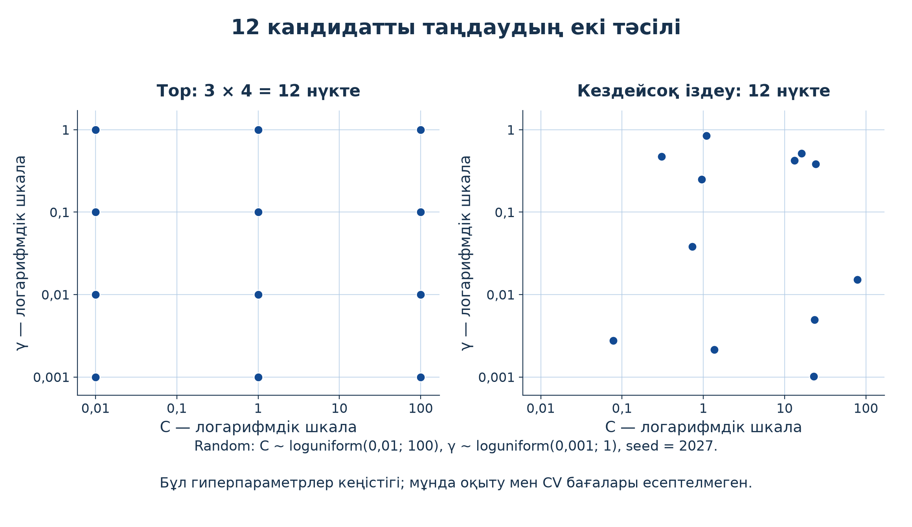
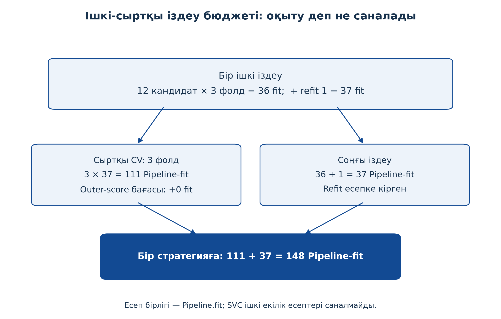
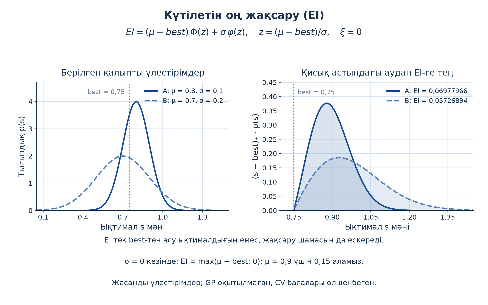
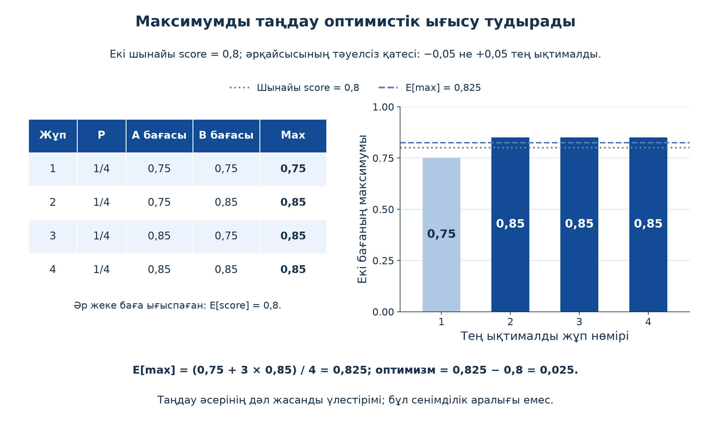
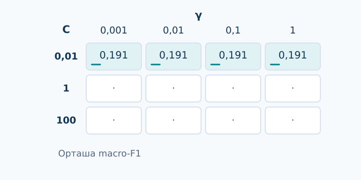
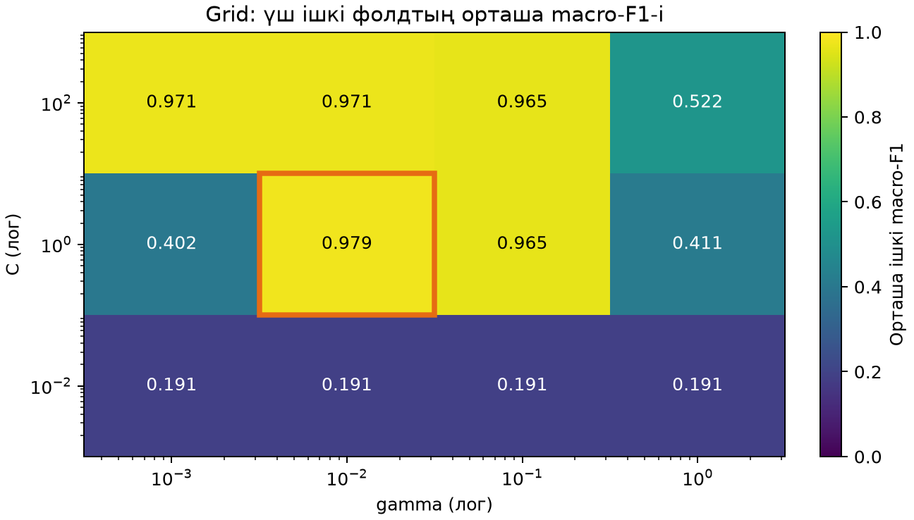
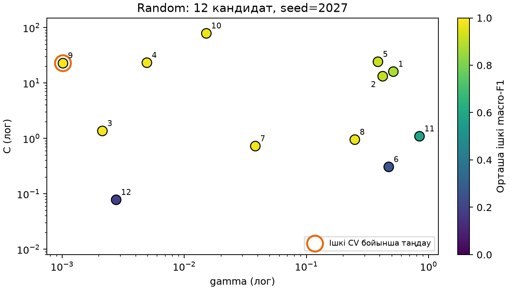

7-тарау. Модельдерді оңтайландыру және гиперпараметрлерді баптау.
7.1 Тақырып бағдаршысы
Бір модельді оқыту есепке қандай баптауларды қолдану керектігіне әлі жауап бермейді. SVM-де C, gamma және ядроны таңдау, ағашта — тереңдік пен жапырақтардың шектеулері, айыппұлды сызықтық регрессияда — регуляризация күші бар. Тіпті белгілерді дайындаудың да бірнеше нұсқасы болуы мүмкін. Гиперпараметрлерді іздеу (hyperparameter search) мұндай шешімдерді берілген кеңістік пен есептеу бюджеті шегінде тексеруді ұйымдастырады. Оның нәтижесі қандай нұсқаларға рұқсат етілгеніне және қандай деректердің таңдауға ықпал етуіне жол берілгеніне тәуелді.
Тараудың мақсаты — іздеу кеңістігін анықтауды, бақыланатын баптауды орындауды және бүкіл таңдау рәсімін бағалауды үйрену. Тарауды меңгерген студент параметрлер мен гиперпараметрлерді ажырата алады, мағыналы тор немесе ұсыныстар үлестірімін құрады, оқыту санын есептейді, байестік оңтайландырудағы күтілетін жақсаруды түсіндіреді, ішкі-сыртқы тексеруді жүргізеді және қайта өндіруге болатын журналды сақтайды. Бұл жұмыс гиперпараметрлерді таңдауға және модельді оңтайландыруға қатысты силлабустың 3.2 индикаторын ашады.
Пререквизиттер: 3–4-тараулардағы оқыту критерийі мен модель параметрлері, 5-тараудағы метрикалар мен CV, 6-тараудағы регуляризация және деректердің ағып кетуін болдырмау. Ықтималдық, математикалық күтім және қалыпты үлестірім туралы түсініктер қажет. Күтілетін жақсару формуласы жеке талданады; оны түсіну үшін күрделі бағдарламалық пакет керек емес. Практика бүкіл Pipeline-ды іздеу нысаны ретінде пайдаланады және бейімделмелі оңтайландырудың орындалатын шағын мысалымен толықтырылады.
Негізгі ұғымдар: конфигурациялар кеңістігі (configuration space), кандидат, Grid Search, Random Search, логарифмдік шкала, шартты параметр, суррогат модель (surrogate model), иемдену функциясы (acquisition function), күтілетін жақсару (expected improvement), ішкі-сыртқы CV (nested cross-validation) және таңдау ығысуы (selection bias). Алдымен оңтайландыру нысаны беріледі, одан кейін кандидаттарды ұсынудың үш тәсілі қарастырылады. Содан соң рәсімнің өзін бағалау мен шығындарды есепке алу енгізіледі. Тарау соңында зертханалық жұмыс пән күнтізбесіндегі өз орнын сақтайтын ресми СӨЖ 1-мен байланыстырылады.
7.2 Нақты не бапталады
7.2.1 Модель параметрлері және рәсім параметрлері
Параметрлер тікелей fit барысында бағаланады: мысалы, сызықтық функцияның коэффициенттері немесе ағаш түйіндерінің шектері. Гиперпараметрлер құру ережелерін белгілейді: айыппұл шамасын, ең үлкен тереңдікті, көршілер санын, дайындау тәсілін немесе итерациялар санын. Бір шама әртүрлі есептерде әртүрлі рөл атқаруы мүмкін. Оны алгоритмнің қай бөлігі алатынын және мәні қандай деректер бойынша таңдалатынын анықтау маңызды.
Шығын функциясын коэффициенттер бойынша оңтайландыру мен тексеру сапасын гиперпараметрлер бойынша оңтайландыру өзара байланысты, бірақ деңгейлері бөлек. Әр кандидат үшін рұқсат етілген оқыту қайта орындалуы керек. Алынған score тегіс емес, есептеуі қымбат және фолдтар құрамына тәуелді болуы мүмкін. Толық іріктеу осы бүкіл үдерістің туындысын қажет етпейді. Гиперградиенттері бар арнайы әдістер де бар, алайда Grid Search-ті әдеттегідей қолдану «оңтайландыру» сөзіне бола градиенттік түсуге айналмайды.
Конфигурацияны θ, рұқсат етілген кеңістікті Θ арқылы белгілейік. Оған толық конвейердің таңдалған барлық баптаулары кіреді. Оқыту индекстері Tₖ және тексеру индекстері Vₖ болатын K тексеру бөлінісін бекітейік. f̂θ,Tₖ арқылы дайындауды бағалауды қоса алғанда тек Tₖ бойынша оқытылған рәсімді белгілейік. Егер жоғары score жақсы болса, кең таралған критерийлердің бірі мынадай:
Θeval іс жүзінде тексерілген конфигурацияларды қамтиды. Шектеулі іздеуде ол рұқсат етілген кеңістіктің аз ғана бөлігін құрауы мүмкін. Сондықтан нәтиже кез келген ықтимал модельдің дәлелденген жаһандық оптимумы емес, қабылданған критерий бойынша сыналғандардың ішіндегі ең жақсысы деп аталады. Score тең болғанда алдын ала анықталған ереже қажет, мысалы, қайта өндіруге болатын реттегі бірінші кандидат.
Мұнда фолдтық score мәндерінің салмақтары тең арифметикалық орташа шамасы айқын таңдалған. Macro-F1 үшін бұл — әр нысанның орташа жеке шығыны емес, біріктірудің нақты ережесі. Біріктірілген OOF-метрика 5-тарауда көрсетілгендей одан өзгеше болуы мүмкін. Егер критерий шығын болса, оны азайтуға немесе теріс шаманы арттыруға болады. Scikit-learn-де neg_root_mean_squared_error сияқты атаулар «score мәні неғұрлым үлкен болса, соғұрлым жақсы» деген ортақ келісімді сақтайды; RMSE-нің өзін шығарғанда таңбасын кері қайтару керек.
7.2.2 Конфигурациялардың мағыналы кеңістігі
Аралық шекаралары мазмұнды жорамалды белгілейді. C-нің 0,01-ден 100-ге дейінгі оң мәндер торы регуляризацияның бірнеше ретін қарастырады. Ағаш тереңдігі бүтін сан болуы немесе шектеудің жоқтығы жеке қарастырылуы керек; көршілер саны рұқсат етілген оқыту бөлігіндегі жолдардың ең аз санымен шектеледі. Автоматты іздеу жарамсыз кандидатты іске қосып, ерекше жағдай ала алатыны оны пайдалы экспериментке айналдырмайды.
7.1-кесте. Баптау түрі және іздеу кеңістігінің құрылысы
| Баптау | Түрі | Ұсыну мысалы | Алдын ала нені тексеру керек |
|---|---|---|---|
| C немесе айыппұлдың оң күші | Оң сан | Логарифмдік шкаладағы бірнеше реттік шама | Мақсатты нормалау және масштабтаумен байланысы |
| Ағаштың ең үлкен тереңдігі | Бүтін сан немесе жеке None мәні | Рұқсат етілген тереңдіктердің қысқа тізімі | Жапырақ өлшемдері және құрылым құны |
| Көршілер саны k | Оң бүтін сан | Бірнеше негізделген жергілікті ауқым | Ең кіші train-фолд бойынша шектеу |
| Ядро және gamma | Санат және шартты сандық баптау | Linear және RBF үшін жеке тармақтар | Gamma-ның тек сәйкес ядрода белсенді болуы |
Шартты параметрлер ерекше маңызды. Gamma RBF-ке әсер етеді, бірақ оны сызықтық ядрода іріктеу сәйкес әртүрлі модельдерді тудырмайды. Бір ортақ декарттық торды мағыналы тармақтар тізімімен ауыстыруға болады: C бар жеке linear тармағы және C мен gamma бар жеке RBF тармағы. Шекаралар мен кандидаттар саны осы тармақтар бойынша есептеледі. Сол сияқты, тек бір режимде жұмыс істейтін алгоритм баптауларын қалғандарының бәрімен механикалық түрде көбейтуге болмайды.
Дайындау кандидаттың құрамына кіреді. Егер StandardScaler мен басқа масштабтау тәсілі салыстырылса, әрқайсысы тиісті train-фолд ішінде қайта оқытылуы керек. Бағдарламалық Pipeline ішінде кірістірілген параметр қадам атауы және қос астыңғы сызық арқылы беріледі, мысалы, model деп аталған қадам үшін model__C. Барлық деректерде алдын ала оқытылған scaler-ден кейін жеке SVC бойынша іздеу (7.1) формуласының рәсіміне сәйкес келмейді.
7.2.3 Іздеу нәтижесі нені білдіреді
Ең жақсы орташа score сыналған кандидаттардың қайсысы осы ережемен таңдалғанын көрсетеді. Best params баптауларды сипаттайды, ал fitted estimator оқытылып қойған модель параметрлерін қамтиды. Refit=True болғанда іздеу нысаны CV-ден кейін таңдалған Pipeline-ды өзіне берілген бүкіл оқыту жиынтығында қайта оқытады. Бұл әрекет fit-ке сыртқы test-ті қоспайды. Сондай-ақ ол ішкі best score-ды қайтарылған нысан сапасының тәуелсіз бағасына айналдырмайды.
Домендерді, ұсыныстар ретін немесе үлестірімдерін, фолдтарды, scorer-ді, теңдік ережесін, seed-ті, бюджетті және нұсқаларды сақтау қажет. Нәтижелерді көргеннен кейін шекаралар кеңейтілсе, жаңа кезең жалпы іздеу рәсімінің бір бөлігі болады. Оның шығындары мен тексеру жауаптарының қатысуын соңғы сәтті іске қосудың артында жасыруға болмайды. Келесі бөлімдер ұсыныстарды қалай ұйымдастыру және алынған рәсімді қалай бөлек бағалау керектігін көрсетеді.
7.3 Тор, кездейсоқ ұсыныстар және шкалалар
7.3.1 Grid Search қанша нұсқа береді
Тор бойынша іздеу (Grid Search) берілген мәндердің барлық үйлесімін тексереді. d белсенді баптаудың j-шісіндегі нұсқалар санын mⱼ арқылы белгілейік; конфигурациялар саны осы сандардың көбейтіндісіне тең. K тексеру фолды болғанда әр кандидат K жеке оқытуды талап етеді. Жеңімпазды бір қосымша refit арқылы қайта оқытатын аяқталған іздеу үшін:
Бірлік іздеуге берілген барлық оқыту жолдарындағы толық Pipeline-ның бір fit-іне сәйкес келеді. Формула қосымша ішкі рәсімдерсіз, қайта іске қосудан немесе кандидаттарды ерте алып тастаудан тыс әдеттегі тексеруді болжайды. Бағалауыш ішіндегі кіріктірілген калибрлеу немесе қосымша ішкі CV өз оқытуларын қосуы мүмкін. Есеп конвейердің жарияланған деңгейіне қатысты, бұл ішкі жұптық есептері бар көпкласты SVC үшін маңызды.
Зертханалық жұмыста C-нің үш мәні және gamma-ның төрт мәні берілген. 3·4=12 конфигурация шығады; үш фолд 36 оқыту береді, ал refit — отыз жетіншісі. Алты тәуелсіз белсенді баптаудың әрқайсысы үшін он мән болса, миллион кандидат болар еді. Бұл — бағдарлама жылдамдығының өлшемі емес, декарттық көбейтіндінің салдары. Шартты тармақтар тізімі үшін кандидаттар саны алдымен әр тармақта есептеліп, содан кейін қосылады.
Бірнеше мағыналы қысқа тізім бар және әр нұсқаны тексеру маңызды болғанда тор ыңғайлы. Ол екі баптаудың өзара әсерін кесте немесе жылу картасы түрінде көруге мүмкіндік береді. Алайда маңызы аз координата бойындағы тығыз тор ұқсас мінез-құлықты есептеулерді қайталап, маңыздырақ координатаның әртүрлі деңгейлеріне аз орын қалдырады. Қай өлшемнің маңызды болатыны алдын ала үнемі белгілі емес. Бұл мәселе Bergstra мен Bengio зерттеген кездейсоқ іздеуге негіз болады.
Нүктелер санының бірдей болуы торларды бірдей етпейді. C=[0,01;1;100] мәндері бірнеше реттік шаманы, ал [1;2;3] тар аймақты қамтиды. Егер ең жақсы нәтиже шекарада болса, бұл — рұқсат етілген кеңістік туралы бақылау; ол шекара сыртында міндетті түрде жақсырақ болатынын дәлелдемейді. Келесі іздеудің негізделген аралығы болуы және ол жалпы журналға кіруі керек. Шекараларды қайта қарағанда сыртқы test жабық қалады.
7.3.2 Random Search және логарифмдік өлшем
Кездейсоқ іздеу (Random Search) алдын ала берілген үлестірімдерден конфигурациялардың шектеулі санын ұсынады. Оның бюджетін ойша алынған толық тор өлшемінен тәуелсіз анықтауға болады. Үздіксіз баптау үшін шекараларды ғана емес, өлшемді де таңдау керек: бастапқы бірліктердегі бірқалыптылық пен логарифм бойынша бірқалыптылық аймаққа түсу ықтималдықтарын әртүрлі етеді. Бұл айырма — ось суретінің ерекшелігі емес, алгоритмнің бөлігі.
0<a<b болатын [a;b] аралығындағы оң c шамасы үшін логарифмдік бірқалыпты үлестірімді тығыздық және бірқалыпты u-ды түрлендіру арқылы беруге болады:
Бірлік ықтималдық шекараларының қатынастары бірдей аралықтар бойынша бөлінеді. C-нің 0,01-ден 100-ге дейінгі ауқымында төрт ондық аралық бар: 0,01–0,1;0,1–1;1–10;10–100. Әрқайсысының ықтималдығы 1/4. u=0,75 кезінде (b/a) көбейткішінің осы дәрежесі 1000-ға тең, сондықтан C=0,01·1000=10. Бұл — берілген u-дан нақты конфигурацияны есептеу; тең ықтималдық үздіксіз үлестірімнің жеке нүктелеріне емес, логарифм аралықтарына қатысты.
Оның орнына C бастапқы аралықта бірқалыпты таңдалса, әрекеттердің елеулі бөлігі үлкен сандық мәндерге келеді. Uniform сөзінің өзі күшті және әлсіз регуляризацияны тең зерттеуді қамтамасыз етпейді. Қатынастары маңызды параметр үшін логарифмдік ұсыну көбіне мазмұн жағынан ыңғайлы. Тереңдік немесе көршілер саны үшін рұқсат етілген дискретті мәндер қажет. Нөл нақты баптау үшін мағыналы болса, жеке нұсқа ретінде қарастырылады және оң аралықтың логарифміне кірмейді.

Дереккөз: берілген домендердің түпнұсқа сызбасы; loguniform және seed 2027 қолданылған ParameterSampler, CV-score мәндері телінбеген.
7.1-суретте берілген тордың он екі түйіні және сол шекаралардағы C,gamma-ның он екі кездейсоқ жұбы көрсетілген. Осьтер логарифмдік. Кескін ұсынылған баптауларды сипаттайды; мұндағы түстер модельдердің өлшенген дәлдігі емес. Практикалық экспериментте әр ұсынысқа өзінің CV нәтижесі сәйкестендіріледі. Стратегияларды салыстыру алынған score мәндерімен бірге кеңістіктерді, үлестірімдерді және бюджетті көрсетуі керек.
RandomizedSearchCV-де ұсыныстар санын n_iter белгілейді. Егер барлық параметр ақырлы тізімдермен берілсе, іске асыру қайтарусыз таңдайды; үлестірім болғанда қайтарумен таңдау схемасы қолданылады. Сондықтан «кездейсоқ іздеу кандидаттарды үнемі қайталайды» деген тұжырым қате. Идеал үздіксіз үлестірімде екі тәуелсіз мәннің дәл сәйкес келу ықтималдығы нөлге тең, бірақ дөңгелектеу, дискретті құрамдастар және шектеулі дәлдік бөлек ескеруді талап етеді.
7.3.3 Түсу ықтималдығы және бюджет шегі
Бюджетті түсіндіру үшін кеңістіктің G аймағын алдын ала бөліп алайық. Әр тәуелсіз ұсыныс оған q ықтималдығымен түссін. N әрекетте түспеу ықтималдығы N сәтсіздік ықтималдығының көбейтіндісіне тең. Демек:
q=0,1 және N=12 кезінде 1−0,9¹²≈0,717570 аламыз. Осындай берілген шарттардың өзінде ықтималдық бірге тең емес. Нақты іздеуде жақсы аймақтың q шамасы әдетте белгісіз, ал тексеру score-ының өзіндік өзгергіштігі бар. Формула нақты жаһандық максимумды табу немесе белгілі деңгейдегі тәуелсіз дәлдік алу ықтималдығын емес, берілген жиынға түсу оқиғасын сипаттайды.
Мұнда әрекеттердің тәуелсіздігі маңызды. Ақырлы тізімнен қайтарусыз таңдауға немесе бейімделмелі байестік ұсыныстарға басқа ықтималдық моделі қолданылады. Олардың n_iter мәнін (7.4)-ке механикалық түрде қоюға болмайды. Үлестірімді алдын ала таңдау q-ды анықтайды: бір геометриялық аймақтың массасы бірқалыпты және логарифмдік өлшемде әртүрлі.
Іздеуді рұқсат етілген development хаттамасы шегінде кеңейтуге болады, алайда әр кеңейту іріктеуге қатысады. Орындалған іске қосулар саны, сәтсіз кандидаттар және домен өзгерістері сақталады. 7.2-сурет ішкі-сыртқы тексеру мен соңғы іздеуді қоса алғанда толық оқытулар есебін көрсетеді. Ол fit саны мен нақты жабдықтағы уақыт айырмасын сақтай отырып, жұмыс көлемін алдын ала бағалауға көмектеседі.

Дереккөз: таңдалған конвейердің refit-ін қоса алғанда 12 кандидат, үш ішкі және үш сыртқы фолд үшін дәл есеп.
7.4 Байестік және бейімделмелі оңтайландыру
7.4.1 Есептеуі қымбат тексеруге арналған суррогат
Grid және Random Search келесі кандидатты таңдау үшін алдыңғы кандидаттың score-ын пайдаланбай ұсыныстар береді. Бейімделмелі рәсім жаңа ұсынысты алынған нәтижелер бойынша құрады. Байестік оңтайландыру (Bayesian optimization) есептеуі қымбат функцияның ықтималдық суррогат моделін және келесі есептеуді таңдау ережесін пайдаланады. Біздің қойылымда есептеуі қымбат функция — θ конфигурациясы бойынша толық Pipeline-ның алдын ала анықталған CV бағасы.
Суррогат «баптаулар — бақыланған score» жұптары бойынша оқытылады. Гаусс үдерісінің регрессиясы (Gaussian Process Regression) берілген ядро мен бақылаулар моделі аясында μ(θ) орташа болжамын және σ(θ) стандартты ауытқуын алуға мүмкіндік береді. Бұл шамалар баптаулар кеңістігіндегі сапа функциясына қатысты. Олар бастапқы нысандар кластарының ықтималдықтары емес. Суррогаттың өзінің kernel гиперпараметрлері де белгілі ережені талап етеді; қарапайым оқу мысалында оларды алдын ала бекітуге болады.
Функция моделі міндетті түрде дәл болмайды. F1 мәндері шектеулі аралықта жатады, сатылы өзгеруі және фолдтар құрамына тәуелді болуы мүмкін; гаусстық жуықтау өздігінен осы қасиеттердің бәрін сақтамайды. Шартты және санаттық параметрлер лайықты ұсынуды қажет етеді. Ядро атауларын 0,1,2 сандарымен кодтау олардың арасындағы евклидтік қашықтықтың қажетті мағынасы бар екенін дәлелдемейді. Демек, рәсімнің жетістігі суррогаттың қаншалықты сәйкес болғанына да тәуелді.
7.4.2 Күтілетін жақсару
Максимумға жеткізілетін функцияның алынған ең жақсы мәнін бекітейік. Негізгі идеалдандырылған қойылымда жақсаруды осы деңгейден асудың оң бөлігі ретінде анықтайық. Оң σ үшін суррогаттың қалыпты болжамдық үлестірімін ұйғарайық:
Үлестірім шарты орындалған тексерулер тарихын қамтиды, ал F — болжамдық модельдегі кездейсоқ шама. Бұл модельдік белгісіздікті нақты сапаның кепілденген аралығымен теңестіруге болмайды. Шулы бақылаулар үшін тірек деңгейді және иемдену функциясын таңдау күрделірек ережені қажет етуі мүмкін. Төменде жақсарудың қосымша шегі нөлге тең болғандағы EI-дің негізгі түрі шығарылады.
d — μ мен осы деңгейдің айырмасы, z=d/σ болсын. Күтімді есептеу тек F-тің тірек деңгейден жоғары мәндерін интегралдайды. Айнымалыны стандартты қалыпты шамамен алмастырғаннан кейін осы аймақтың ықтималдығы Φ(z)-ті, ал көбейткіші бар стандартты тығыздық интегралы φ(z)-ті береді. Аламыз:
Φ — стандартты қалыпты заңның үлестірім функциясы, φ — оның тығыздығы. σ=0 болғанда болжам бекітілген мәнге айналады және EI=max(d,0). Бағдарламалық кодта нөлге бөлу қажет емес: бұл жағдай бөлек өңделеді. Егер шығын оңтайландырылса, жақсару бағытын үйлесімді түрде өзгерту керек. Ең аз жақсарудың қосымша параметрі де d анықтамасын өзгертеді және ол жариялануы тиіс.
Жасанды мысалда алынған ең жақсы score 0,75-ке тең. A нүктесі үшін суррогатта μ=0,8 және σ=0,1, сондықтан d=0,05,z=0,5 және EI≈0,069780. B үшін μ=0,7,σ=0,2 берілген: d=−0,05,z=−0,25,EI≈0,057269. B-нің орташа шамасы тірек деңгейден төмен болса да, оның белгісіздігі жақсарудың оң күтілетін мүмкіндігін қалдырады. Қабылданған EI бойынша осы екі ұсыныстың ішінен A таңдалады. μ=0,9,σ=0 болатын азғындалған болжам үшін күтілетін жақсару 0,15-ке тең.

Дереккөз: best=0,75 кезіндегі түпнұсқа гаусстық есептер; бұлар оқытылған жіктеуіштің бақыланған бағалары емес.
7.3-сурет дәл осы жасанды болжамдық үлестірімдерді және есептелген EI-ді көрсетеді. Ол оқытылған SVM-нің өлшенген score мәндерін бермейді. Орташа шама мен шашырау ұсынысқа бірге әсер етеді: жоғары μ келешегі бар аймақты пайдалануды қолдайды, үлкен σ оны әрі қарай зерттеуді қолдауы мүмкін. EI — таңдалған суррогат модельдегі оң ұтыстың күтілетін шамасы. Ол келесі нақты орындалған CV ағымдағы максимумды жақсартатынына кепілдік бермейді.
7.4.3 Толық цикл және орындалатын оқу мысалы
Тізбекті рәсім рұқсат етілген доменнен, бастапқы нүктелердің шағын жиынынан және бекітілген бағалау тәсілінен басталады. Осы бағалар орындалғаннан кейін суррогат құрылады, иемдену функциясының максимумы таңдалады, нақты қымбат тексеру іске қосылады және тарих толықтырылады. Бұл цикл алдын ала анықталған шекке дейін қайталанады. EI максимумының өзін іздеуге де есептеу рәсімі керек: бір өлшемде ұсыныстардың жеткілікті тығыз ақырлы торын тексеруге болады.
Тарау Notebook-інде алдын ала бекітілген gamma=0,01 кезінде [−2;2] аралығындағы x=log10(C) үшін шағын нақты цикл іске асырылған. Бастапқы үш x=−2,0,2 нүктесі тек train бойынша үш фолдты CV арқылы бағаланады. Содан кейін тексерілгендері алынып тасталған 201 рұқсат етілген x деңгейінен EI бойынша алты бейімделмелі ұсыныс орындалады. Әр score толық Pipeline-ды оқыту арқылы нақты алынған. Суррогат алдын ала берілген Matérn ядросын пайдаланады, оның параметрлер оптимизаторы өшірілген. Мұндай шектеу тізбекті қайта өндіруге және тексеруге түсінікті етеді.
Тоғыз CV бағасы 9·3=27 толық оқытуды қажет етеді, содан кейін табылған конфигурация бүкіл train-де бір рет оқытылады: барлығы 28 Pipeline.fit. Суррогаттың жеке есебі алты GPR fit құрайды. Осы бөлек оқу толықтыруына test берілмейді. Оның ең жақсы development-score-ы таңдау нәтижесі болып қалады. Gamma-сы бекітілген бірөлшемді домен негізгі Grid/Random тәжірибелерінің екіөлшемді доменінен өзгеше, сондықтан осы толықтырудың бюджеті мен мақсаты дербес көрсетіледі.
Функция туралы бақылаулар көбейген сайын суррогат та уақыт пен жад қажет етеді. Бірнеше кандидатты қатар орындау қолжетімді нәтижелер тізбегін өзгертеді, ал тексеру құны параметрлерге тәуелді. Ресурс шектеулері, сәтсіз оқытулар және ерте тоқтату тарихта көрсетілуі тиіс. Ұсыныстарды байестік таңдау бюджетті пайдалануды ұйымдастырады; қорытынды бағаның тәуелсіздігін әрі қарай қарастырылатын бөлек деректер схемасы қамтамасыз етеді.
7.1–7.4-бөлімдерге арналған бастапқы дереккөздер
- Scikit-learn. GridSearchCV, RandomizedSearchCV, Gaussian Processes.
- SciPy. loguniform.
- Bergstra, J., Bengio, Y. (2012). Random Search for Hyper-Parameter Optimization. JMLR, 13, 281–305.
- Snoek, J., Larochelle, H., Adams, R. P. (2012). Practical Bayesian Optimization of Machine Learning Algorithms. NIPS 25.
Scikit-learn 1.9.1 ресми құжаттамасы және қолжетімді SciPy нұсқаулығы 04.11.2026 күні тексерілген. Мұнда EI score-ды максимумға жеткізу үшін шығарылған; барлық шағын мысал автордың бастапқы эксперименттерінен бөлек беріліп, есептелген.
7.5 Таңдау ығысуы және ішкі-сыртқы тексеру
Гиперпараметрлерді іздеу тексеру нәтижелерін жаңа шешімнің негізіне айналдырады. Бұл автоматты іріктеуге де, «кестені қарадық — аралықты өзгерттік — тағы сынадық» деген қолмен жасалатын тізбекке де қатысты. Сондықтан қорытынды бағалау нысаны таңдалған конфигурацияны ғана емес, оны алу тәсілін де қамтиды: рұқсат етілген деректерді, параметрлер кеңістігін, критерийді, бюджетті және тоқтату ережесін. Алдын ала берілген жеке кандидатты дұрыс бағалау және дәл сол баға бойынша таңдалған кандидатты дұрыс бағалау — екі түрлі есеп.
Score-ды максимумға жеткізу керек деп есептейік. Алдын ала анықталған ақырлы m≥1 кандидаттың әрбір j-сі үшін Ŝⱼ кездейсоқ бағасы алынған. Ол деректермен және бөліністермен бірге, ал кейбір рәсімдерде оқыту кездейсоқтығымен де өзгереді. Бағалардың математикалық күтімдері ақырлы болсын. Кез келген нәтиже кезінде максималды баға әрбір бекітілген кандидаттың бағасынан кем емес. Орташалаудан кейін бұл мынаны береді:
Бұл теңсіздікке бағалардың тәуелсіздігі қажет емес. Олар бірдей тексеру нысандарына және қиылысатын оқыту бөліктеріне тәуелді болуы мүмкін. Егер жеке бекітілген кандидаттардың бағалары олардың мақсатты сапаларына қатысты ығыспаған болса, бақыланған ең жақсы score-дың орташа шамасы осы сапалардың ең жақсысынан кем емес. Іріктеу модельдің пайдалы қасиетімен қатар оң ауытқуды да артық көруі мүмкін. Нақты CV-де бағаның күтімі шынайы сапаға тең болуы жеке негіздеуді қажет етеді: мысалы, аралық модельдер соңғы модельге қарағанда азырақ жолда оқытылады. Формула мұндай айырмаларды жоймайды және ығысу шамасын автоматты есептемейді.
7.1-есептік мысал. Бірдей рәсімдердің арасынан таңдау. Екі кандидаттың шынайы сапасы бірдей, 0,8 болсын. Әрқайсысының бағалау қатесі 1/2 ықтималдықпен +0,05 не −0,05-ке тең. Тек осы жасанды мысалда қателер қосымша тәуелсіз деп есептеледі. Тең ықтималды төрт үйлесім шығады: (0,85;0,85), (0,85;0,75), (0,75;0,85), (0,75;0,75). Максимумдары тиісінше 0,85;0,85;0,85;0,75. Олардың орташа шамасы 3,30/4=0,825. Алдын ала таңдалған кез келген кандидаттың орташа бағасы бұрынғыша 0,8-ге тең, бірақ орташа ең жақсы баға 0,025-ке артық.

Дереккөз: бірдей екі шынайы score 0,8, тәуелсіз қателер плюс не минус 0,05; тең ықтималды төрт нәтиже.
7.4-суретте төрт баға жұбы және әр жұптың максимумы көрсетілген. Әрбір алдын ала таңдалған кандидаттың орташа бағасы 0,8-ге тең болса да, олардың 0,825 орташа шамасы шынайы 0,8-ден асады.
Бұл мәндер CV іске қосу нәтижелерін немесе нақты жиындағы әсер өлшемін емес, берілген бағалар үлестірімін сипаттайды. Бағалар тең болса, нөмірі кіші кандидатты таңдауды алдын ала бекітуге болады; бұл есептелген максимумға әсер етпейді. Мысал әр іздеу нәтижені дәл 0,025-ке арттыратынын немесе кандидаттар санының кез келген өсуі осындай өсім беретінін дәлелдемейді. Бірдей бағалар толық келісімді өзгерсе, (7.7)-де теңдік жағдайы да мүмкін. Маңыздысы — қолайлы флуктуацияны таңдау механизмі.
Жеке іске қосуда жеңімпаз шынымен ең жақсы да, кездейсоқ сәтті де болуы мүмкін; бір кесте оның score-ын осы себептерге дәл жіктеуге мүмкіндік бермейді. Табылған іздеу нәтижесінен оқу мысалының түзетуін механикалық азайтуға болмайды. Оны нақты есепте есептеу үшін берілген қателер үлестірімі жоқ. Қайталама тәуелсіз тексеру табылған максималды мән шешіммен байланысып қойғандықтан қажет. Сол сияқты, шығынды азайтқанда таңдалған ерекше аз баға тек күтілетін қатенің аздығын емес, қолайлы кездейсоқ ауытқуды да көрсетуі мүмкін.
Оптимизм және деректер шекараларын бұзу. Таңдаудың табиғи оптимизмі техникалық тұрғыдан дұрыс ішкі CV кезінде де пайда болуы мүмкін: scaler тек әр фолдтың train бөлігінде оқытылған, барлық кандидат рұқсат етілген тексеру жолдарын алған. Егер кейін максималды ішкі score бүкіл рәсімнің тәуелсіз қорытындысы деп берілсе, таңдау мен бағалау рөлдері араласады. Test-ті оқытуға қосу, аралықты тест нәтижесі бойынша баптау немесе болашақтағы белгіні пайдалану — басқа жағдай. Бұл жарияланған қолжетімділік хаттамасын бұзу болады. Қате fit-ті түзету көптеген дұрыс бағаланған кандидат арасынан таңдаудың статистикалық әсерін жоймайды. Бұл мәселелерді бөлу кез келген шашырауды деректердің ағып кетуі демей, мәселенің себебін анықтауға мүмкіндік береді. Cawley мен Talbot зерттеуі таңдау критерийінің өзінің шамадан тыс үйренуін қарастырады.
Әрекеттер жиынына соңғы кестеге кірмеген шешімдер де кіреді. Зерттеуші алдымен бірнеше ұсынуды тексеріп, сәттісін қалдырып, тек соңғы шағын grid-ті көрсетсе, таңдау тарихы көрсетілген grid-тен кеңірек. Нәтижелерді көргеннен кейін метриканы өзгерту де жаңа шешім болып саналады. Журнал гипотезалар мен қайта қараулар тізбегін сақтауы керек. Бұл зерттеуді дамытуға тыйым салмайды; ол қандай нәтижелер әзірлеуге қызмет еткенін және қайсылары оның қорытындысын әлі тәуелсіз тексере алатынын анықтайды.
Ішкі-сыртқы CV нені тексереді. Сыртқы бөліністе іздеуге қатыспайтын блок бөлініп алынады. Қалған оқыту бөлігінде бүкіл жарияланған таңдау орындалады: дайындауды оқыту, рұқсат етілген конфигурацияларды іріктеу және ішкі нәтижелер бойынша жеңімпазды анықтау. Жеңімпаз конвейер бүкіл сыртқы оқыту бөлігінде қайта оқытылып, содан кейін ғана сыртқы блокқа болжам жасайды. Келесі сыртқы бөліністе іздеу қайта орындалады; таңдалған параметрлер өзгеше болуы мүмкін. Дәл осы өзгергіштік іске асыру қатесі емес, бағаланатын рәсімнің бөлігі.
Егер іздеуге белгілерді іріктеу, калибрлеу немесе шекті баптау кірсе, олар да сыртқы оқыту бөлігінің ішінде қалады. Алдымен барлық деректер бойынша белгілерді таңдап, содан соң тек қалған C іріктеуін ішкі-сыртқы деп атауға болмайды. Нақты орындалған тізбек бағаланады. Уақыттық немесе топтық қойылымда бөлудің екі деңгейі де қолдану шектеулерін сақтауы керек; сыртқы циклді қосу қате бөлу бірлігін түзетпейді. Ішкі таңдау мен сыртқы бағалауды бөлудің егжей-тегжейлі бағдарламалық мысалы nested CV туралы ресми материалда берілген.
Сыртқы модельдер автоматты түрде қорытынды ансамбль құрмайды және табылған параметр мәндерін орташалауға негіз бермейді. Мысалы, таңдалған бірнеше полином дәрежесінің орташа шамасы рұқсат етілген жиынға мүлде кірмеуі мүмкін, ал C-нің орташа шамасы жарияланған критерийдің нәтижесі емес. Ішкі-сыртқы тексеру сыртқы оқыту бөліктерінің дерек өлшемдерінде қайталанатын таңдау үдерісін бағалайды. Бір түпкілікті нысанды алу үшін бұл үдеріс толық рұқсат етілген train-де іске қосылады. Мұндай нысан параметрлері барлық сыртқы жеңімпаз параметрлерінен өзгеше болуы мүмкін; бұл айырмашылықтың өзі хаттаманы бұзбайды.
Қорытынды тексеруге бөлінген сыртқы test ішкі-сыртқы CV кезінде де жабық қалады. Әзірлеу аяқталғаннан кейін таңдалған іздеу стратегиясы бүкіл рұқсат етілген train-ге қолданылып, оның соңғы конфигурациясы мен хаттамада көзделген оқытылған нысаны алынады. Содан кейін әрекет ережесі бекітіліп, test ашылады. Сыртқы CV блоктары мен осы test бір шешімді тізбекті жақсартуға арналған қосымша алаңдар емес. Егер сыртқы CV нәтижелері бойынша стратегияның өзі өзгертілсе, бұл нәтижелер әзірлеуге ықпал етеді; тәуелсіз бағалау шекарасын қайта сипаттау керек.
Стратегияларды бірдей сыртқы бөліністерде салыстырып, жұптық айырмаларды сақтау пайдалы. Бұл рәсім әсерінің тексеру нысандарының айырмасымен араласуын азайтады. Алайда фолд нөмірлері бөлек болғанына бола үш сыртқы мән үш тәуелсіз экспериментке айналмайды: оқыту бөліктері қиылысады. Стандартты ауытқу бақыланған шашырауды сипаттайды және дайын сенімділік аралығы емес. Қайталама seed те бұрынғы деректерді пайдаланады. Стандартты ауытқуға еркін таңдалған бір коэффициент қолданып, шағын айырманың мәнділігін шығаруға болмайды; дисперсияны осылай қарапайым бағалаудың шектеулері Bengio мен Grandvalet еңбегінде талданған.
7.6 Есептеу бюджеті және эксперименттер журналы
Іздеу қолжетімді ресурстарға сыйып, нәтижесі тоқтағаннан кейін түсінікті мағынасын сақтауы керек. Бюджет салыстыру мақсатымен бірге іске қосудан бұрын беріледі. Толық оқыту санын, кандидаттар санын, ұзақтығын не шарттардың үйлесімін шектеуге болады. Бұл шектеулер баламалы емес: конфигурациялар санының бірдей болуы секундтардың бірдейлігін білдірмейді, ал бірдей уақыт кеңістікті зерттеудің бірдей тереңдігін қамтамасыз етпейді. Есепте нақты қолданылған ережені атап, сәтсіз әрекеттерге жұмсалған есептеулерді ескеру керек.
7.2-есептік мысал. Толық оқытуларды санаймыз. Үш сыртқы бөлініс, үш ішкі фолд, әр іздеуде он екі кандидат және refit=True берілген. Бюджет бірлігі деп конвейердің бір толық fit-ін атайық: оның барлық үйренетін түрлендірулері мен бағалауышын рұқсат етілген бір бөлікте оқыту. Қайта іске қосусыз, қосымша іздеусіз және жеке калибрлеу рәсімінсіз аяқталған оқытулар ұйғарылады. Бір сыртқы оқыту бөлігі үшін ішкі іріктеу осындай 12·3=36 fit талап етеді. Тағы бір fit жеңімпаз конвейерді осы бүкіл сыртқы оқыту бөлігінде оқытады, сондықтан 37 шығады.
Үш сыртқы қадам толық Pipeline-ның 3·37=111 fit-ін талап етеді. Сыртқы бағалаудан кейін толық рұқсат етілген train-дегі соңғы іздеу он екі кандидатты үш ішкі фолдта қайта тексеріп, бір refit орындайды: тағы 36+1=37. Жалпы бюджет бір стратегияға 111+37=148. Соңғы refit осы 37-ге кіріп тұр; оған тағы сондай оқытуды қосуға болмайды. Егер бірдей жоспармен екі стратегия тәуелсіз салыстырылса, қосымша baseline және диагностикалық тәжірибелерді есептемегенде осы салыстыру үшін 296 fit шығады.
Бұл — уақыт бағасы емес, анықталған операциялардың санауышы. Алынған болжамдар бойынша метриканы есептеу өздігінен fit қоспайды. SVC бір оқыту ішінде бірнеше жұптық екілік есепті шешсе, олар толық Pipeline-ның жеке шақырулары деп саналмайды. Дегенмен олар бағалауыш жұмысын арттырады және ұзақтықты өзгертуі мүмкін. Шекке арналған қосымша OOF оқытулары, қайталама seed немесе жеке калибрлеу бөлек есепті қажет етеді. 148 саны тек жоғарыда толық берілген схемаға қатысты. Refit мәні мен рөлі GridSearchCV құжаттамасында бекітілген.
Алғашқы нәтижелерге дейін не бекітіледі. Іздеу кеңістігі шекаралары мен шкалалары бар рұқсат етілген мәндер немесе үлестірімдер тізімі ретінде беріледі. Ол мазмұнды гипотезаға сәйкес болуы керек. C зерттелсе, белгілерді дайындауды және оның нормалануының мағынасын сақтау қажет; әйтпесе бірдей сандар әртүрлі шектеулерді білдіруі мүмкін. Кездейсоқ іздеу үшін тек табылған мәндер емес, ұсыныстар саны мен үлестірім жазылады. Шекаралық жеңімпазды байқағаннан кейін аймақты кеңейтуге әзірлеудің жалғасы ретінде рұқсат етіледі, бірақ оны әрекеттер саны мен есептеу бюджетінен жасыруға болмайды.
Кейбір параметрлер шартты. Полиномдық ядро дәрежесі сызықтық SVM-нің мазмұнды баптауы емес; бір бағалауыштың баптаулар жиынын екіншісіне механикалық түрде беруге болмайды. Кеңістікті рұқсат етілген тармақтарға бөлу мағынасыз үйлесімдер мен бюджеттің алдын ала жұмыс істемейтіні белгілі нұсқаға жұмсалуын болдырмайды. Есептік мысалдағы он екі кандидат нақты тексерілетін он екі конфигурацияны білдіреді. Баламалы баптауды әртүрлі атаумен қайталау шешімдер кеңістігін кеңейтпейді, бірақ нақты қайталама оқытулар ресурс жұмсайды. Бірнеше үйлесімді параметрлер сөздігі бойынша іздеу scikit-learn нұсқаулығында сипатталған.
Бірдей фолдтар кандидаттарды тексеру құрамы бірдей болғанда салыстыруға мүмкіндік береді. Бөлудің, кездейсоқ конфигурация ұсыныстарының және бағалауыштың seed мәндерін іске қосу ретімен бірге бөлек сақтаған жөн. Олар score-ды көргенге дейін беріледі. Бекітілген seed кездейсоқ рәсімнің бір іске асуын қайта өндіреді, бірақ қорытындысының орнықтылығын дәлелдемейді. Орнықтылық алдын ала таңдалған бірнеше seed бойынша зерттелсе, қайталаулар мен олардың құны жоспарға кіреді. Ең сәтті seed-ті таңдап, нәтижесін әдеттегі қорытынды ретінде беру іріктеудің тағы бір жасырын кезеңін қосады.
Уақыт жолдар мен белгілер санына, модель параметрлеріне, жинақталуға, деректерді дайындауға және ортаға тәуелді. Тіпті параметрдің екі көршілес мәні әртүрлі жұмыс талап етуі мүмкін. Параллель орындау күту уақыты мен жад тұтынуын өзгертеді, бірақ математикалық оқыту санын жоймайды. Іздеудің басынан соңына дейінгі нақты өткен уақытты қатар жүруі мүмкін жеке тапсырмалар уақытының қосындысынан ажырату керек. Кітапхана нұсқалары, аппараттық орта, үдерістер саны және ағын баптаулары айырманы түсіндіруге көмектеседі; тек кандидаттар санауышы бойынша жылдамдықты ойдан шығаруға болмайды.
Болжам алу және метрикаларды есептеу де толық конвейердің жаңа fit-тері болмаса да уақыт жұмсайды. Деректер көшірмелері мен бір мезгілде іске қосылған модельдерді сақтау рұқсат етілген параллельділікті процессордан бұрын шектеуі мүмкін. Екі стратегия шығындары салыстырылса, өлшеудің басы мен соңын бірдей анықтау керек: дайындау, бағаларды алу, артефактілерді жазу және соңғы қайта оқыту кіре ме? Бір стратегия жеңімпазын ғана оқыту уақытын екіншісінің бүкіл іріктеу уақытымен салыстыруға болмайды. Негізді қорытынды үшін жалпы орындалу уақытымен бірге кезеңдердің жеке өлшемдері пайдалы.
Алдын ала жоспарлау үшін рұқсат етілген деректерде шағын пилот жүргізіп, оны әзірлеу мен бюджетке айқын жатқызуға болады. Ол тым ауыр дайындауды немесе жад жетіспеуін байқауға мүмкіндік береді, бірақ күрделірек кандидаттың ұзақтығына кепілдік бермейді. Түрлендірулерді кэштеу де нақты құнды өзгертеді: логикалық fit саны бұрынғыдай қалуы мүмкін, ал есептеулердің бір бөлігі қайта пайдаланылады. Сондықтан журналда есептік жоспар да, өлшенген шығындар да сақталып, үдеудің түсіндірмесі нақты механизммен байланыстырылады.
Ресурс бойынша тоқтау және аяқталмаған әрекеттер. Уақыт шегі мен оған жеткендегі әрекет алдын ала жарияланады. Іске қосылған fit-ті аяқтауға рұқсат етіле ме, жартылай орындалған кандидатпен не істеу керек және қорытынды қандай аяқталған нәтижелерден таңдалады — осыны анықтау қажет. GridSearchCV-де бүкіл іздеу операциясына арналған жалпы нақты уақыт timeout параметрі жоқ; мұндай бақылау лайықты сыртқы механизмді немесе шектеуі айқын қолдау тапқан өзге рәсімді қажет етеді. Параллель тапсырмалар саны өздігінен уақыт шегін белгілемейді. Үзілісті жарияланған барлық кандидаттың аяқталған зерттеуі деп көрсетуге болмайды.
Қатаң тоқтау кезінде баяу конфигурациялар толық тексерілмеуі мүмкін. Олардың жеңімпаздар арасында болмауы болжам сапасының нашар екенін дәлелдемейді. Уақыт шектеуіндегі салыстыруда ұсыныстар реті, шығындарға рұқсаты және нәтиже қайтару ережесі бар бүкіл стратегия бағаланады. Салыстыру әр кандидат үшін бірдей толық фолдтарды талап етсе, бұл шартты қай конфигурациялар орындағанын айқын хабарлау керек. Үзілген әрекеттің кездейсоқ сәтті жалғыз фолдын аяқталған әрекеттің үш фолдтық орташа шамасымен салыстырып, біртұтас бағалау көрінісін сақтауға болмайды.
Оқыту ішіндегі ерте тоқтату бүкіл іздеуді тоқтатудан өзгеше. Бір fit таңдалған validation-checkpoint-ті сақтап, әртүрлі эпоха санынан кейін аяқталуы мүмкін. Жеткен қадам, тоқтату ережесі және қайтарылған күй жазылады. Мониторинг деректері тиісті деңгейдің тек рұқсат етілген оқыту бөлігінен алынады; сыртқы блок тоқтауды басқармайды. Автоматты ішкі бөлу уақытты немесе топтарды бұзса, кітапхана early stopping-ті қолдайтынына бола оны рұқсат етілген деп санауға болмайды. Өзгерген рәсім жаңа үйлесімді сипаттаманы қажет етеді.
Сәтсіз әрекеттер де іске қосу нәтижелері болып саналады. Журналда орындалу қатесі, жад жетіспеуі, уақыттан асу, жинақталмау ескертуі және сәтті аяқталу ажыратылады. Ескертуді автоматты түрде дәл оңтайландырудың сәттілігі деп те, бағдарлама ерекше жағдайы деп те санауға болмайды. GridSearchCV үшін error_score ережесі ішкі fit қателерін өңдеуді басқарады. Жартылай сәтсіздікте сандық error_score баға орнына қойылып, FitFailedWarning беріледі; raise режимінде ерекше жағдай шақырушы кодқа беріледі. Барлық ішкі fit қатемен аяқталса, scikit-learn сандық error_score кезінде де ValueError шығарады. Бұл ереже refit-ке таралмайды: оның қатесі айқын туындайды. Осы келісімдер GridSearchCV параметрлерінде сипатталған. Бос немесе жарамсыз score-ды білдіртпей жақсы санға ауыстыруға болмайды.
Қатеден кейін үйлеспейтін параметр түзетілсе, түсіндірілетін өзгерісі бар іске қосудың жаңа нұсқасы пайда болады. Бастапқы әрекет пен жұмсалған уақыт тарихта қалады. Қайталау ортадағы сыртқы ақауға байланысты қажет болса, оны сәттірек кездейсоқ нәтиже үшін қайталаудан ажырату керек. Әр кандидат үшін бастапқы мәртебе мен қалпына келтірудің соңғы мәртебесі болғаны пайдалы. Мұндай есеп есептеу ақауын гипотезаның мазмұнды теріске шығарылуынан бөліп, жарияланған кеңістіктің қай бөлігі іс жүзінде салыстырмалы тексеру алғанын көруге мүмкіндік береді.
7.2-кесте. Іздеу, бюджет және артефактілер журналының өрістері
| Өріс | Не сақталады | Бұл не үшін қажет |
|---|---|---|
| Деректер | Дереккөз, нұсқа, жол ID-лері, бақылау қосындысы | Зерттелген жиынтықты қалпына келтіру |
| Қойылым | Мақсат, оң класс, негізгі метрика | Таңдау мағынасын сақтау |
| Бөліністер | Сыртқы және ішкі бөліктер индекстері, топтар, уақыт | Қолжетімділік шекаралары мен жұптылықты тексеру |
| Кеңістік | Рұқсат етілген тармақтар, аралықтар, шкалалар, үлестірімдер | Әрекеттер жиынын қалпына келтіру |
| Кездейсоқтық | Бөлудің, ұсыныстардың және бағалауыштың seed-тері | Жарияланған іске асуды қайталау |
| Бюджет | Fit жоспары, нақты іске қосулар, шек және тоқтату ережесі | Аяқталған жоспарды үзілгеннен ажырату |
| Әрекет | ID, параметрлер, әр фолдтың score-ы, жиынтық, мәртебе | Жеңімпазды сәтсіз нұсқалармен бірге көру |
| Оқыту | Уақыт, ескертулер, эпохалар саны, checkpoint | Құн мен жинақталуды бағалау |
| Артефактілер | Конфигурация, журнал, оқытылған нысан, нұсқалар және файл хэштері | Қорытынды шешімнің шығу тегін тексеру |
Журнал орындалу барысында толықтырылады, сәтті нәтижеден кейін тек жадтан қалпына келтірілмейді. Идентификатор нәтиже жолын нақты конфигурациямен және файлдармен байланыстырады; модель атауының бірдей болуы мұны қамтамасыз етпейді. Іске қосу жалғастырылса, жалғастыру шекарасы мен қайта орындалған операциялар жазылады. Қорытынды есеп қысқа болуы мүмкін, бірақ тұжырымы сақталған тарихпен расталуы тиіс. Осындай тәртіп шектеулі салыстыруды қайталауға және деректер, уақыт пен орындалған рәсім нақты қандай шешімді қолдайтынын түсінуге мүмкіндік береді.
Оқытылған нысанды бағалау кезінде пайдаланылған дайындау баптауларымен және шекпен байланыстыру ерекше маңызды. Scaler-сіз сақталған classifier немесе бұрынғы бағандар тізімі бар конфигурация толық предикторды қалпына келтірмейді. Бақылау қосындысы файлдың ауыстырылғанын табуға көмектеседі, бірақ өздігінен бөлудің дұрыстығын немесе деректердің ағып кетпегенін растамайды. Сондықтан машиналық артефактілер жанында олардың шығу тегі мен мақсатының түсінікті сипаттамасы сақталады. Зерттеуді қайталаушы адам қорытынды қолдану нысанын, фолдтардың аралық модельдерін және диагностикалық нәтиже файлдарын ажыратуы керек.
Әдістемелік негіз: S05 — таңдау мен бағалауды бөлу, 19 және 26-слайдтар; S06 — бақыланатын диагностика және баптауларды таңдау, 4–7 және 14–15-слайдтар; S13 — қайта өндірілу, бөліністерді бекіту және эксперименттерді ұсыну, 1 және 4–5-бөлімдер. Оқулықтың бұл бөлімдері ресми өзіндік жұмыстың талаптарын немесе бағалануын өзгертпейді. Бастапқы құжаттар тиісті тұжырымдардың қасында тікелей көрсетілген; қаралған күні — 2026 жылғы 4 қараша.
7.7 Python тіліндегі практикалық іске асырулар
7.7.1 Рәсімдерді алдын ала берілген бюджетпен салыстырамыз
Бір модель іздеу тәсіліне қарай әртүрлі гиперпараметр алуы мүмкін. Дәл стратегияны зерттеу үшін деректерді, бөліністі, дайындауды, модельді, метриканы және кандидаттар санын бекітейік. Grid Search берілген тізімдердің декарттық көбейтіндісін тексереді, Randomized Search жарияланған үлестірімдерден үйлесімдер алады. Ешбір стратегия таңдау кезінде тәуелсіз жауаптарға қол жеткізбейді. Бұл практикада екі рәсім де алдын ала берілген және екеуі де қорытынды тексеруге дейін жеткізіледі.
Нақты кіріктірілген Wine пайдаланылады: 178 нысан, 13 химиялық көрсеткіш және үш класс. Дереккөз — UCI Wine, авторлары S. Aeberhard және M. Forina; CC BY 4.0 лицензиясы UCI карточкасында көрсетілген. Бастапқы жиын кластары кітапханада 0, 1, 2 түрінде берілген. CSV сақталғанда атрибуция сақталады; деректер оқулық авторының жеке генерациясы деп көрсетілмейді.
Seed=2026 бар 80/20 стратификацияланған бөлу 142 train және 36 test береді. Класс сандары тиісінше 47/57/38 және 12/14/10. Кірістер толық Pipeline-ға түседі: StandardScaler және RBF ядросы бар SVC. Ықтималдықтар қажет емес: f1_macro scorer-і болжанған кластарды алады. Баптау shuffle=True, seed=2027 бар үш ішкі стратификацияланған фолдтың орташа macro-F1-і бойынша жүргізіледі.
Wine химиялық көрсеткіштері Италияның бір өңірінен алынған үлгілерге және үш культиварға қатысты. Бұл — болашақтағы кез келген өнімнің репрезентативті іріктемесі емес, шағын тарихи жиын. Онда баптауларды таңдау оқыту мен бағалау арасындағы шекараны зерттеуге пайдалы. Тіпті жоғары қорытынды дәлдік рәсім басқа өлшеу жабдығында немесе нысандар құрамы өзгергенде қалай әрекет ететінін анықтамайды. Мұндай өзгерістер торды кеңейтуді ғана емес, жаңа қойылым мен деректерді тексеруді қажет етеді.
7.7.2 1-мысал: тордың он екі түйіні
Grid үшін C=[0,01; 1; 100] және gamma=[0,001; 0,01; 0,1; 1] алдын ала берілген. Декарттық көбейтінді 3×4=12 үйлесімді қамтиды. Әрқайсысына толық конвейердің үш ішкі оқытуы келеді. Таңдаудан кейін refit=True ең жақсы Pipeline-ды барлық 142 train-де оқытады. Осылайша негізгі іздеу соңғы қайта оқытуды қоса алғанда Pipeline.fit-тің 12×3+1=37 шақыруын талап етеді.
Параметрлер model қадамының атаулары арқылы беріледі. Бұл іздеуге әр фолдта бүкіл конвейерді клондап, қайта оқытуға мүмкіндік береді. Ішкі CV алдында бүкіл train-де алдын ала оқытылған бір StandardScaler оның тексеру бөліктерінің ақпаратын пайдаланар еді. Бұл код қажетті шекараны автоматты сақтайды, себебі GridSearchCV-ге Pipeline-ның өзі берілген. Refit пен cv_results_ мінез-құлқы GridSearchCV құжаттамасында сипатталған.
C бөлуді бұзғаны үшін айыппұлдың салыстырмалы қатаңдығын, gamma RBF ұқсастығының қашықтықпен өзгеру ауқымын басқарады. Олардың әсері стандарттаудан кейін бірге қарастырылады. Үлкен gamma ядро жауабын өте жергілікті ете алады, бірақ пайдалы күрделілік туралы қорытынды C-ге де тәуелді. Сондықтан бір gamma мәнінің жеке жақсы нәтижесін басқа C-ге немесе өзге бірліктердегі белгілерге көшіруге болмайды. Бұл тәжірибеде тек осы екі гиперпараметр өзгереді, ал кірістерді ұсыну мен ядро сақталады.
from sklearn.datasets import load_wine
from sklearn.model_selection import (
train_test_split, StratifiedKFold, GridSearchCV)
from sklearn.pipeline import Pipeline
from sklearn.preprocessing import StandardScaler
from sklearn.svm import SVC
from sklearn.dummy import DummyClassifier
from sklearn.metrics import accuracy_score, f1_score, confusion_matrix
X, y = load_wine(return_X_y=True)
Xa, Xb, ya, yb = train_test_split(
X, y, test_size=.2, stratify=y, random_state=2026)
pipe = Pipeline([
("scale", StandardScaler()), ("model", SVC(kernel="rbf"))])
inner = StratifiedKFold(3, shuffle=True, random_state=2027)
search = GridSearchCV(
pipe, {"model__C": [.01, 1, 100],
"model__gamma": [.001, .01, .1, 1]},
cv=inner, scoring="f1_macro", n_jobs=1,
refit=True, error_score="raise")
search.fit(Xa, ya)
print("Ең жақсы параметрлер", search.best_params_)
print("Ең жақсы ішкі macro-F1", search.best_score_)
print("Pipeline оқыту саны", len(search.cv_results_["params"]) * 3 + 1)
models = {"DummyPrior": DummyClassifier(strategy="prior").fit(Xa, ya),
"Grid": search}
grid_rows = []
for name, model in models.items():
predicted = model.predict(Xb)
row = {"model": name, "Accuracy": accuracy_score(yb, predicted),
"macro_F1": f1_score(yb, predicted, average="macro", zero_division=0),
"CM": confusion_matrix(yb, predicted, labels=[0, 1, 2]).tolist()}
grid_rows.append(row)
print(row)
7.7.3 2-мысал: он екі кездейсоқ үйлесім
Екінші стратегия сол аймақты пайдаланады: C 0,01-ден 100-ге дейін, gamma 0,001-ден 1-ге дейін. Мәндер scipy.stats.loguniform-нан алынады, n_iter=12, seed=2027. Бірқалыптылық логарифмге қатысты: C-нің төрт ондық ретінің әрқайсысының ықтималдығы бірдей. Бұл масштабты бірнеше есе өзгертудің мағынасы бірдей абсолют өсімнен маңыздырақ параметрлерді зерттеуге көмектеседі. Үлестірім анықтамасы SciPy бастапқы құжаттамасында берілген.
Аймақ пен кандидаттар санының бірдей болуы нүктелердің бірдейлігін білдірмейді. Тор тек тізімделген мәндерді тексереді, кездейсоқ іздеу олардың арасына түсуі мүмкін, бірақ ақырлы он екі әрекетпен біркелкі қамтуға кепілдік бермейді. Мұнда модель, scorer, ішкі бөліністер және refit те бірдей. Оқыту саны бойынша салыстыру үйлесімді; нақты уақыт үйлесімдер арасында өзгеше болуы мүмкін және өлшенбейінше тең деп жарияланбайды.
Кездейсоқтық келесі нүктені ұсынуға жауаптарды пайдалануды білдірмейді. Бұл нұсқада үлестірімдер оқытуға дейін берілген және алдыңғы балдарға қарай өзгермейді. Үлестірімдер бар болса, API параметрлерді қайтарумен таңдайды; үздіксіз шамалар үшін дәл сәйкестіктің теориялық ықтималдығы нөл. Нақты алынған он екі үйлесім суреттен жуықтап қалпына келтірілмей, сақталады. Бейімделмелі оңтайландырумен салыстыру деректерге қолжетімділіктің сол шекарасын сақтап, ұсыныстар тәсілі мен бюджетті бөлек анықтауды қажет етер еді.
from scipy.stats import loguniform
from sklearn.datasets import load_wine
from sklearn.model_selection import (
train_test_split, StratifiedKFold, RandomizedSearchCV)
from sklearn.pipeline import Pipeline
from sklearn.preprocessing import StandardScaler
from sklearn.svm import SVC
from sklearn.dummy import DummyClassifier
from sklearn.metrics import accuracy_score, f1_score, confusion_matrix
X, y = load_wine(return_X_y=True)
Xa, Xb, ya, yb = train_test_split(
X, y, test_size=.2, stratify=y, random_state=2026)
pipe = Pipeline([
("scale", StandardScaler()), ("model", SVC(kernel="rbf"))])
inner = StratifiedKFold(3, shuffle=True, random_state=2027)
search = RandomizedSearchCV(
pipe, {"model__C": loguniform(.01, 100),
"model__gamma": loguniform(.001, 1)},
n_iter=12, random_state=2027, cv=inner, scoring="f1_macro",
n_jobs=1, refit=True, error_score="raise")
search.fit(Xa, ya)
print("Ең жақсы параметрлер", search.best_params_)
print("Ең жақсы ішкі macro-F1", search.best_score_)
print("Pipeline оқыту саны", len(search.cv_results_["params"]) * 3 + 1)
models = {"DummyPrior": DummyClassifier(strategy="prior").fit(Xa, ya),
"Random": search}
random_rows = []
for name, model in models.items():
predicted = model.predict(Xb)
row = {"model": name, "Accuracy": accuracy_score(yb, predicted),
"macro_F1": f1_score(yb, predicted, average="macro", zero_division=0),
"CM": confusion_matrix(yb, predicted, labels=[0, 1, 2]).tolist()}
random_rows.append(row)
print(row)
Екі баспа мысалы да дербес: әрқайсысы деректерді қайта жүктеп, сол бөліністі құрады. Біріктірілген Notebook тек train ішіндегі алдын ала анықталған ішкі-сыртқы тексеруді қосады. Екі мысалды іске қосып, стратегияны қорытынды сандармен таңдап, сол test-ті осы қосымша таңдаудың тәуелсіз бағасы деп атауға болмайды. Негізгі хаттамада алдын ала берілген екі рәсімнің де нәтижелері көрсетіледі.
7.7.4 Бүкіл іздеу рәсімін ішкі-сыртқы тексеру
Notebook-тің сыртқы CV-і тек 142 train-де орындалатын shuffle=True, seed=2028 бар үш стратификацияланған фолдты қамтиды. Әр сыртқы оқыту үшін Pipeline мен seed=2027 бар ішкі CV-ді қоса алғанда толық search клонданады. Ішкі таңдау сыртқы тексеру жауаптарын көрмейді. Жеңімпаз сыртқы оқыту бөлігінде refit-тен өткеннен кейін оның сыртқы тексеруінде бір macro-F1 есептеледі. Содан кейін үдеріс қалған фолдтар үшін қайталанады.
Сыртқы оқыту көлемдері 94, 95, 95, тексеру көлемдері — 48, 47, 47. Grid outer macro-F1 мәндері 0,978645; 1,000000; 0,954678, орташа шамасы 0,977775 болды. Random 0,978645; 0,979959; 0,958047, орташа шамасы 0,972217 алды. Бұл үш баға осы бөліністегі алдын ала берілген рәсімнің шашырауын сипаттайды. Олар тәуелсіз қайталаулар деп жарияланбайды және автоматты сенімділік аралығын құрмайды.
Фолдтар салыстыруы жұптап үйлестірілген: біріншісінде нәтижелер тең, екіншісінде Grid жоғары, үшіншісінде Random жоғары. Демек, орташа шамалардың шағын айырмасы әр тексеру бөлігіндегі басымдықты білдірмейді. Екі стратегияның алты мәнін алты тәуелсіз тәжірибе деп көрсетуге болмайды: олар өзара байланысты оқыту жиындары мен бірдей сыртқы нысандарды пайдаланады. Есепте барлық үш жұп сақталып, әдістерді әмбебап реттемей, дәл бақыланған айырма көрсетіледі.
Әр сыртқы фолд Pipeline-ның 37 оқытуын талап етеді, сондықтан nested бөлігі бір стратегияға 3×37=111 пайдаланады. Негізгі іздеумен бірге 148, ал екі стратегия үшін 296 шығады. DummyPrior жеке оқытуды қажет етеді және Pipeline-ның бұл қосындысына кірмейді. Санауыш SVC үш класс үшін шешетін жұптық екілік ішкі есептерге емес, бүкіл конвейердің fit шақыруларына қатысты.
Кездейсоқ іздеудің бекітілген seed-і сыртқы фолдтарда клондағанда да сол он екі үйлесімді қайта өндіреді. Мұнда көптеген кездейсоқ трассалар бойынша орташа емес, дәл осы алдын ала берілген рәсім бағаланады. Seed-ке тәуелділікті зерттеу үшін train ішінде қайталаулардың бөлек, алдын ала сипатталған жоспары қажет. Қалаған нәтиже шыққанша seed-ті өзгерту артықшылықтың тәуелсіз растауы болып саналмайды.
Ішкі-сыртқы оқыту үш сыртқы жеңімпаздан бір ортақ модель жасамайды. Олардың әрқайсысы рәсімді өз сыртқы тексеруінде бағалауға қажет және кейін қорытынды деректерге қолданылмайды. Негізгі іздеу барлық 142 жолда бөлек іске қосылып, параметрлерді қайта анықтайды. Оның refit-і де үш ішкі модельді орташалау емес: үйлесім таңдалғаннан кейін бүкіл рұқсат етілген көлемдегі жаңа оқыту орташалары және масштабтарымен жаңа оқыту жасалады.
7.7.5 Бағаның үш түрлі мағынасы
7.3-кесте. Негізгі іздеудің ішкі таңдауы және train-дегі орташа сыртқы баға. Дереккөз: орындалған Wine тәжірибесі; outer CV 36 test жолын пайдаланбайды.
| Стратегия | Ең жақсы C | Ең жақсы gamma | Best inner F1 | Орташа outer F1 |
|---|---|---|---|---|
| Grid | 1 | 0,01 | 0,979087 | 0,977775 |
| Random | 22,787565 | 0,001016724 | 0,986512 | 0,972217 |
Best inner — 142 train-дегі бір іздеу ішінде кандидаттар бойынша максималды орташа шама. Бұл көрсеткіш таңдауға қатысқан және бүкіл рәсім бағасы ретінде оптимистік болуы мүмкін. Outer кішірек оқыту бөліктеріндегі қайталама ішкі іздеуді бағалайды; онда басқа параметрлер таңдалуы мүмкін. Test 142 жолдағы негізгі refit-тен кейінгі модельді бағалайды. Бұл мәндер оқытудың әртүрлі деңгейлері мен көлемдеріне қатысты, сондықтан әр ақырлы іріктемеде сәйкес келуі немесе бір ретпен орналасуы міндетті емес.
Мұнда орташа сыртқы баға — үш macro-F1-дің әдеттегі орташа шамасы. Ол барлық сыртқы болжамдарды біріктіргеннен кейінгі бір macro-F1 ретінде анықталмаған: метрика матрицалар қосындысына қатысты сызықтық емес, ал фолд өлшемдері аздап өзгеше. Екі сипаттаманы да алдын ала жарияланған басқа хаттамада есептеуге болады, бірақ түсіндірместен бірін екіншісіне ауыстыруға болмайды. Жеке мәндерді сақтау оқырманға біріктірудің қай тәсілі нақты қолданылғанын және оған қандай қорытындылар сүйенетінін тексеруге мүмкіндік береді.
Nested CV баптауға пайдаланылған сол тексерулерде бағалау мәселесін азайтады, бірақ кез келген қойылымды автоматты түзетпейді. Оның нәтижелері бойынша аймақты, модельді және критерийді қайта-қайта өзгертсе, сыртқы фолдтар да әзірлеуге қатыса бастайды. Мұнда аймақтар мен стратегиялар есептеуге дейін жарияланған, ал қорытынды тест олардың арасынан таңдауға пайдаланылмайды. Тиісті жіктеуді scikit-learn ішкі-сыртқы CV мысалы түсіндіреді.
Қолданылатын іске асырудағы әдеттегі теңдік ережесі cv_results_ ретіндегі ең жақсы рангты бірінші кандидатты таңдайды. Тор үшін рет оның үйлесімдерінің тізбегімен, кездейсоқ іздеу үшін параметрлерді таңдау ретімен анықталады. Теңдік кестені үш таңбаға дөңгелектеуге емес, есептелген орташа мәндерге қатысты. Негізгі іске қосуларда максимум жалғыз: нөлден санағанда Grid-те 5, Random-да 8 индексі. Бірінші рангтың барлық индекстері JSON-да сақталған.
Пәндік есеп сапа жақын болғанда кішірек модельді немесе азырақ есептеу шығынын артық көруді талап етсе, мұндай қосымша ереже қорытынды бөлікті талдаудан бұрын беріледі. Бірінші кандидаттың әдеттегі ережесі өздігінен бұл талаптарды білдірмейді. Бірде-бір баға өзгермесе де, кандидаттардың орнын ауыстыру дәл теңдік кезінде жеңімпазды өзгертуі мүмкін. Сондықтан рет пен таңдау ережесі аралықтармен қатар рәсім сипаттамасына кіреді. Дөңгелектелген жарияланым кестесі оқуға, ал бастапқы сандық мәндер таңдауды қайта өндіруге қызмет етеді.
7.7.6 Графиктер тек ішкі бағаларды пайдаланады
Іздеу торынан гиперпараметрлерді таңдау
Wine деректерінің оқыту бөлігіндегі тор бойынша іздеу нәтижесі. Әр ұяшық үш ішкі фолдтың орташа macro-F1 бағасын көрсетеді.

C=0,01 болғанда γ-ның төрт мәні тексеріледі. Осы тәжірибеде төртеуінің де орташа бағасы шамамен 0,191.
Барлық қадамның мәтіні
- Бірінші қатар — C=0,01 болғанда γ-ның төрт мәні тексеріледі. Осы тәжірибеде төртеуінің де орташа бағасы шамамен 0,191.
- Екінші қатар — C=1 болғанда γ=0,01 ұяшығының орташа бағасы 0,979087 болады. Әр ұяшық үшін үш бөлек оқыту орындалады.
- Торды толық тексеру — C=100 қатары қосылғанда 3×4=12 үміткер түгел салыстырылады. Осы қатардағы ең жоғары баға 0,971370.
- Таңдау және қайта оқыту — Ішкі бағасы ең жоғары жұп — C=1 және γ=0,01. Үш фолдпен 36 оқыту, таңдалған модельді қайта оқытумен барлығы 37 оқыту орындалады.

Дереккөз: Wine train бөлігіндегі жеке есеп; жақтау таңдалған кандидатты белгілейді.
C және gamma осьтері логарифмдік. Ұяшықтағы түс пен сан тексерілген үйлесімнің бағасын көрсетеді. Ұяшық ауданы түйінді көрсетуге қызмет етеді және іздеу барлық аралық мәнді тексергенін білдірмейді. C=0,01 кезінде төрт gamma да шамамен 0,191 береді; C=1 және gamma=0,01 кезінде 0,979087-ге жетеді. Бұл торда үлкен gamma=1 тіпті үлкен C кезінде тексеру бағасын нашарлатады. Бұл — рұқсат етілген gamma-ның әмбебап шекарасы емес, нақты деректер туралы бақылау.

Дереккөз: жеке есеп; екі ось те логарифмдік, нөмірлер 1-ден 12-ге дейінгі кандидаттар ретіне сәйкес.
Random-да №9 нүкте таңдалған: C≈22,787565 және gamma≈0,001016724. Сақина тестілеу нәтижесін емес, ішкі таңдауды көрсетеді. №3 нүктенің де орташа балы жоғары, 0,986449, жеңімпаздың 0,986512 мәніне жақын. Мұндай шағын алшақтықты дәл анықталған оптимум дәлеліне айналдыруға болмайды. Суреттің бос аймағы ондағы барлық параметр сапасының төмендігін емес, тексерілген нүктелердің жоқтығын білдіреді. Аймақ айналасындағы шағын жиектер маркерлерді көрсету үшін қосылған.
Екі стратегия суреттері нөлден бірге дейінгі бір түс шкаласын пайдаланады. Сондықтан нүктелер орналасуы мен көрсету пішіні өзгеше болса да, бірдей түстің мағынасы бірдей. Кездейсоқ кандидаттар нөмірлері сапаның жақсару ретін емес, қайта өндіруге болатын таңдама ретін көрсетеді: іздеу келесі нүктені алдыңғысы негізінде оқытпайды. Диаграмманы оптимизатордың тізбекті траекториясы деп оқу қате болар еді. Қай нүктелер ең сәтті көрінгеніне қарамастан, барлық он екі баға есепте қалады.
7.7.7 Қорытынды тәуелсіз бөлік
Қорытынды тексеру үшін 142 train-де refit-тен өткен негізгі іздеулер жеңімпаздары пайдаланылады. Бұл refit әр стратегияның 37 fit шақыруына кіреді. DummyPrior сол жауаптарда оқытылып, үнемі ең жиі 1 класын таңдайды. Тәуелсіз деректерде бастапқы класс сандары сақталады. Кестедегі матрицалар жол бойынша жазылған: жолдар — шынайы 0/1/2, бағандар — болжанған 0/1/2.
7.4-кесте. Wine-ның 36 нысанында екі берілген стратегия мен DummyPrior-дың бір қорытынды бағасы. Дереккөз: орындалған тәжірибе; стратегия test бойынша таңдалмайды.
| Модель | Accuracy | Macro-F1 | Қателер матрицасының жолдары |
|---|---|---|---|
| DummyPrior | 0,388889 | 0,186667 | [0 12 0] / [0 14 0] / [0 10 0] |
| Grid | 1,000000 | 1,000000 | [12 0 0] / [0 14 0] / [0 0 10] |
| Random | 0,972222 | 0,974321 | [12 0 0] / [1 13 0] / [0 0 10] |
Random-ның жалғыз қатесі — 1 класының нысаны 0 класына жатқызылған. Бір нысан Accuracy-ді 1/36≈0,027778-ге өзгертеді. Grid-те осы жолдарда қате жоқ, бірақ бұл болашақ деректерде қатесіз болуға уәде бермейді. Random-да best inner жоғары, бірақ қорытынды macro-F1 Grid-тен төмен. Мысал ішкі іздеу максимумы неге болашақтың дәл бағасы емес екенін және тесттегі ретті неге қайта таңдауға пайдалануға болмайтынын көрсетеді.
Матрица macro-F1-ді қолмен тексеруге мүмкіндік береді. Random-да 0 класы үшін 24/25=0,96, 1 класы үшін 26/27≈0,962963, 2 класы үшін 1 шығады. Олардың әдеттегі орташа шамасы 0,974321. Бір қате шынайы кластың толықтығына да, болжанған кластың дәлдігіне де әсер етті, сондықтан метрика Accuracy=35/36-мен сәйкес келмеді. DummyPrior-да тек 1 класының F1-і нөлден өзгеше: ол 28/50=0,56; үш класс бойынша орташалау 0,186667 береді. Мұндай қалпына келтіру жоғары жалпы сапа туралы бір хабардан пайдалырақ.
7.7.8 Сақталатын материалдар
Толық lab07.py және Notebook барлық параметр мен ішкі фолдтық бағаларды, сыртқы нәтижелерді, матрицалар мен бөліктер индекстерін сақтайды. Wine_search.csv CSV файлы 13 бастапқы белгі, target және қызметтік split бағанын қамтиды. Target пен split модельге берілмейді. Wine_Attribution.txt экспортпен бірге жүреді: дереккөз, авторлар, лицензия және белгілердің кітапханадағы көрінісі көрсетілген. Бұрын жасалған wine_sklearn.csv қайта жазылмайды.
Тексеру нақты stdout және PNG нәтижелерімен таза күйде орындалады. 12 кандидат, бірдей ішкі бөліністер, қиылыстардың болмауы және соңғы масштабтауыш жолдарының саны бақыланады. Ешбір баға алдын ала жазылған тұрақтымен ауыстырылмайды. Seed, scikit-learn және SciPy нұсқасы, үйлесімдер тізімдері және теңдік ережесі хаттамаға кіреді: қайта өндіруге «параметрлер автоматты таңдалды» деген жалғыз хабар жеткіліксіз.
Есептеу салыстыруының ауқымы да айқын сақталады. Іздеудің бір үдерісі, фолдтардың бірдей саны және бір бағалау тәсілі қолданылады, бірақ SVC ішкі шешушісі әртүрлі итерация санын орындай алады. Fit санын бекіту бірдей жадқа не уақытқа кепілдік бермейді. Мұнда ықтималдық көрсеткіштері есептелмейді: негізгі есеп кластарды бағалайды, ал ықтималдық алудың қосымша рәсімдері есептеу хаттамасын өзгертер еді. Кез келген кеңейту жаңа жұмыс көлемін көрсетіп, оны бастапқы 37 оқытумен араластырмауы керек.
7.7.9 Автоматты оңтайландырудың жеке бейімделмелі мысалы
Notebook қосымша Expected Improvement, EI бойынша тізбекті таңдауды іске асырады. Бұл — жеке бірөлшемді есеп: gamma=0,01 бекітілген, x=log10(C) −2-ден 2-ге дейін өзгереді. Бастапқы x мәндері −2, 0, 2; келесі алтауы тексерілгендерді алып тастап, 201 бірқалыпты түйін арасынан таңдалады. Мақсатты функцияның әр шақыруы сол 142 train-дегі толық Pipeline-ның үш фолдтық орташа macro-F1-ін нақты есептейді. Қорытынды 36 жол толықтыру функциясына берілмейді.
GaussianProcessRegressor суррогаты бекітілген ConstantKernel=1 және ұзындығы 1, nu=2,5 болатын Matern пайдаланады; optimizer=None, alpha=10⁻⁶, normalize_y=True, seed=2027. Болжанған орташа мен стандартты ауытқу бойынша EI қалыпты CDF/PDF арқылы есептеледі. Бақыланған ең жақсы балға қатысты күтілетін жақсару максимумы таңдалады. Стандартты ауытқу нөл болса, орташа шамалар айырмасының оң бөлігі алынады. Тең максимумдар өспелі тордың бірінші түйінімен шешіледі.
Мұнда alpha параметрі суррогаттың ковариациялық матрицасының диагоналіне шағын шама қосады. Оның мағынасы Ridge-тегі коэффициенттер айыппұлынан өзгеше және ол жіктеуіштің C параметрін алмастырмайды.
Бейімделмелі x мәндері алынды: 0,92; 0,42; 1,50; −0,46; −0,28; 1,20. Бақыланған ең жақсы C≈0,346737 үшін CV macro-F1≈0,986449. Тоғыз нақты мақсатты шақыру 27 Pipeline.fit талап етеді, содан кейін табылған Pipeline train-де бір рет оқытылады: барлығы 28, негізгі бюджеттен бөлек. Суррогаттың алты fit-і бөлек есептеледі. X/C/score трассасы, фолд мәндері және санауыштар JSON-да сақталған.
Бұл бақыланған ең жақсы бал бейімделуге қатысқан және тәуелсіз қорытынды баға емес. Домен бірөлшемді, бюджет пен есеп негізгі салыстырудан өзгеше; толықтыру Grid/Random рейтинг кестесіне кірмейді. Ол нашарлауларды қоса барлық бақылауды сақтап, келесі ұсынысқа алдыңғы нәтижелердің нақты пайдаланылуын көрсетеді.
7.8 №7 зертханалық жұмыс
Grid Search, Randomized Search және автоматты оңтайландыру әдістерін пайдаланып модель гиперпараметрлерін баптау.
Мақсат және оқыту нәтижелері
Мақсат — үйлесімді бюджетте екі іздеу рәсімін салыстырып, таңдауды ішкі-сыртқы тексеру ішінде дұрыс бағалау. Жұмыстан кейін студент аймақ пен үлестірімдерді береді, CV ішінде толық Pipeline ұйымдастырады, best_inner/outer/test мәндерін түсіндіреді, оқыту санын есептейді, трассаны сақтайды және шектеулі қорытындыны негіздейді. Толық атау силлабустан алынған. Жеке бірөлшемді толықтыру test-те қорытынды тексерусіз бейімделмелі EI іздеуін көрсетеді.
Орта, деректер және алдын ала шарттар
Python, numpy, pandas, scipy, matplotlib, scikit-learn және Notebook үшін Jupyter қажет. Тексерілген нұсқалар QA-да сақталған. Орта дайындалғаннан кейін Wine желіден жүктелмей, жергілікті функциямен алынады. Бастапқы көрсеткіштердің сандық шкалалары әртүрлі, сондықтан масштабтау әр оқытылатын конвейерге кіреді.
Іске қосудан бұрын домендерді, әрекеттер санын, scorer, seeds және есеп беру ережесін жазбаша бекітіңіз. Атрибуция файлы CSV-мен бірге таратылады. Нақты бақылауларды жасанды жолдармен алмастырмаңыз, target/split-ті белгілерге қоспаңыз және қалаған матрица үшін тәуелсіз жауаптарды өзгертпеңіз. Барлық жеке зерттеу қолжетімді train ішінде ұйымдастырылады.
Он қадамнан тұратын орындау реті
- Салыстыру мақсатын, C/gamma аймақтарын, әр стратегияға он екі кандидат пен macro-F1-ді жазыңыз. Бірдей бюджет неліктен іске қосудан бұрын анықталатынын түсіндіріңіз.
- Wine-ды жүктеңіз, 178×13 өлшемін және үш класты тексеріңіз, дереккөз бен лицензияны сақтаңыз. Кез келген fit-ке дейін seed=2026 арқылы деректерді стратификациялап 142/36 етіп бөліңіз.
- StandardScaler+SVC(kernel='rbf') Pipeline-ын және seed=2027 бар ішкі үш фолдты StratifiedKFold құрыңыз. Екі стратегия индекстерінің сәйкестігін тексеріңіз.
- 3×4 торын және екі loguniform үлестірімін беріңіз. Кездейсоқ трасса үшін n_iter=12 және seed=2027 көрсетіңіз; логарифмдік және сызықтық бірқалыптылықты шатастырмаңыз.
- Nested CV-ді тек train-де орындаңыз: seed=2028 бар үш сыртқы фолд және әрқайсысында толық іздеудің clone-ы. Үш бағаны, параметрлерді және оқыту көлемдерін сақтаңыз.
- Негізгі іздеулерді барлық 142 train-де refit=True арқылы іске қосыңыз. Cv_results_, best_params_, best_score_, best_index_ және бірінші ранг индекстерін сақтаңыз.
- Тек ішкі бағаларды пайдаланып тордың жылу картасын және кездейсоқ үйлесімдер диаграммасын салыңыз. Логарифмдік осьтер мен таңдау дереккөзін белгілеңіз.
- DummyPrior-ды train-де оқытып, кейін берілген екі стратегия үшін test кластарын бір рет алыңыз. Accuracy, macro-F1 және матрицаларды бірыңғай ретпен есептеңіз.
- Стратегияны test бойынша таңдамай, best_inner, үш outer бағасы және test-ті салыстырыңыз. Pipeline.fit-тің 37 және 111 шақыруын есептеп, санау бірлігін түсіндіріңіз.
- Жеке EI толықтыруын тек train-де және тағайындалған ішкі нұсқаны орындаңыз, деректерді, атрибуция мен трассаларды сақтаңыз, Notebook-ті таза күйден қайта іске қосып, шектеулерді түсіндіріңіз.
Train ішіндегі алты жеке нұсқа
- Шекараларды өзгертпей, 12 түйіні бар алдын ала берілген екі торды салыстырыңыз және test-ке жүгінбей ішкі таңдаудың өзгеруін зерттеңіз.
- Бірдей бюджетпен кездейсоқ іздеудің алдын ала жарияланған үш seed-ін орындаңыз. Тек ең сәтті іске қосуды хабарламай, барлық трассаны сақтаңыз.
- Сол шекараларда loguniform-ды сызықтық бірқалыпты үлестіріммен салыстырыңыз. Қай аралықтарға көбірек мүмкіндік берілетінін және неліктен екенін түсіндіріңіз.
- Ішкі фолд санын үштен беске өзгертіп, бюджетті қайта есептеңіз. Салыстырылатын рәсімдер үшін сыртқы бөліктерді үйлесімді сақтаңыз.
- Train ішінде таңдау критерийлері ретінде macro-F1 мен Accuracy-ді салыстырыңыз. Бастапқы екі сұрақты да сақтап, ең жақсы кандидаттың өзгеретінін бағалаңыз.
- Орташалары бірдей жасанды кесте беріп, бірінші кандидат ережесін түсіндіріңіз. Содан кейін дәл теңдік пен дөңгелектеуден кейінгі теңдікті ажыратыңыз.
Есеп және жергілікті критерийлер
Есеп деректер көзін, қолжетімділік схемасын, іздеу кеңістіктерін, бюджетті, барлық кандидатты, бөліністерді, сыртқы бағаларды, 7.3–7.4-кестелерді, 7.5–7.6-суреттерді, матрицалар мен жеке нұсқаны қамтиды. Үш outer балы сенімділік аралығы деп аталмайтынын, ал ең жақсы ішкі нәтиже баптауға қатысқанын бөлек түсіндіріңіз. Кодты, CSV, атрибуцияны, JSON және нұсқаларды тіркеңіз.
Толықтықтың жергілікті рубрикасы — 100%: қойылым және деректер — 15%, Pipeline ішіндегі дұрыс іздеу — 25%, nested хаттамасы — 20%, түсіндіру және бюджет — 20%, жеке нұсқа — 10%, қайта өндірілу — 10%. Бұл үлестер силлабустың ресми балдарын алмастырмайды. Қорғауда студент бір таңдалған үйлесімнің шығу тегін қалпына келтіріп, оны таңдағанда қандай жауаптар қолжетімсіз болғанын көрсетеді.
Бақылау сұрақтары
- Неліктен бірдей шекаралар мен кандидаттар саны бірдей тексерілген нүктелерді білдірмейді?
- Loguniform ондық реттік шамалар арасында ықтималдықты қалай бөледі?
- Толық Pipeline неліктен search ішінде болуы керек?
- Ішкі таңдаудан кейін refit не істейді?
- Best_inner outer және қорытынды test-тен несімен өзгеше?
- Толық search үшін clone әр сыртқы фолдта неге орындалады?
- Неліктен үш outer бағасы дайын сенімділік аралығы емес?
- Әр стратегияға 37 негізгі және 111 nested оқыту қалай шығады?
- Ең жақсы орташа мәндердің дәл теңдігі қалай өңделеді?
- Неліктен test=1 бойынша Grid-ті таңдап, сол test-ті қайтадан тәуелсіз деуге болмайды?
Бастапқы дереккөздер — UCI Wine және scikit-learn/SciPy құжаттамасы, сілтемелері мәтінде берілген. Зертханалық жұмыстың дәл атауы — бекітілген силлабус. Салыстыру дизайны мен түсіндірмелер осы тарау үшін әзірленген; API 2026 жылғы 4 қарашада тексерілген.
7.9 Өзіндік жұмыс және есептер
Өзін-өзі тексеруді қалай ұйымдастыру керек
Іздеу алдын ала анықталған деректері, параметрлер кеңістігі, критерийі және бюджеті бар рәсім ретінде бағаланады. Қолмен шығарылатын есепте алдымен есептеу бірлігін және score жақсару бағытын атаңыз. Зерттеу үшін деректердің шығу тегін, бөліністер индекстерін және әрекеттерді аяқтау ережелерін де сақтаңыз. Кандидаттар санының бірдей болуы уақыттың бірдейлігін білдірмейді, ал ең жақсы ішкі нәтиже тәуелсіз тексеруді алмастырмайды.
Сандық есептерде кездейсоқтықтың үш көзін ажыратыңыз: конфигурацияларды ұсыну, олардың сапасын бағалау қатесі және суррогат модельдің белгісіздігі. Түсу ықтималдығының формуласы берілген ұсыныстар схемасына қатысты. EI қабылданған суррогат үлестірімге қатысты. Орташа максимум бағалардың бірлескен үлестіріміне қатысты. Осы шарттардың орнына жалғыз «кездейсоқтық» сөзін қою арифметика дұрыс болғанның өзінде қате қорытындыға әкеледі.
Келесі шарттар жасанды және өзін-өзі тексеру үшін толық берілген. Олар нақты GP/EI бар Notebook нәтижелері емес және кітапхана жылдамдығын анықтамайды. Блок ресми СӨЖ-ге жаңа балл не талап тағайындамайды: оның тұжырымы мен бағалануы силлабус бойынша бөлек қарастырылады.
Бақылау сұрақтары
- Модель коэффициенті мен imputer-дің үйренген медианасы C, gamma және бөлу ережелерінен несімен өзгеше? Рәсімнің әр баптауы неге жіктеуіштің өз гиперпараметрі емес?
- Толық Pipeline CV іздеуіне неліктен кіруі керек? Бүкіл матрицаны алдын ала дайындағанда тексеру фолдтарының ақпаратын нақты не пайдаланады?
- Тордың декарттық көбейтіндісі қалай беріледі және параметрлердің шартты тармақтарын неге бөлу керек? Баламалы баптауды қайталау неге зерттелген аймақты кеңейтпейді?
- C бойынша бірқалыптылық log(C) бойынша бірқалыптылықтан несімен өзгеше? Толық ондық аралықтардың тең ықтималдығы нені білдіреді және ол неге жеке нүктенің оң ықтималдығын білдірмейді?
- Қандай жорамалдарда кемінде бір random-түсудің ықтималдығы 1−(1−q)ᴺ-ге тең? Ақырлы тізімдерден үйлесімдерді қайтарусыз таңдау неге бөлек талдауды қажет етеді?
- Суррогат, оның μ мен σ шамалары және acquisition функциясы қандай рөл атқарады? EI максимумы неге шынайы сапаның жақсаруына кепілдік бермейді?
- Scaler-дің қате fit-і болмаса да максималды ішкі score оптимизмі қалай пайда болады? Ол сыртқы test бойынша таңдаудан несімен өзгеше?
- Nested CV қандай нысанды бағалайды және әр сыртқы бөліністе іздеу неліктен қайта орындалады? Сыртқы жеңімпаздардың табылған параметрлерін неге жай орташалау талап етілмейді?
- Кандидаттар саны, Pipeline.fit саны, уақыт және жад қалай байланысты? Калибрлеу, шекті OOF арқылы баптау және қайталама seed кезінде бюджетке қандай операцияларды қосу керек?
- Журналдың қай өрістері сәтсіз гипотезаны үзілген әрекеттен немесе орындалу қатесінен ажыратады? Сәтсіз іске қосуларды өткізіп жіберу салыстыру мағынасын неге өзгерте алады?
Жауапта қолданылудың нақты шартын келтіріңіз. Ықтималдық есебінде кездейсоқ таңдау схемасын, бюджет есебінде бір fit деп нені санайтыныңызды, салыстыру есебінде деректердің рұқсат етілген бөлігін көрсетіңіз. Тәуелді фолдтардың стандартты ауытқуын дайын сенімділік аралығы демеңіз. Бақыланған максимум таңдауға пайдаланылса, оны тәуелсіз қорытынды нәтижеден бөліңіз.
Есептер
1-есеп. Баптаулар және толық бюджет. Қолдану. Рәсім үйренетін scaler мен RBF-SVC-ді қамтиды. Оқытылған предиктор коэффициенттерін, scaler орташаларын, C, gamma, бөлу seed-ін және негізгі метриканы қарастырыңыз. Оларды fit кезінде бағаланатын шамаларға, бағалауыш гиперпараметрлеріне және хаттама баптауларына бөліңіз. Содан кейін C-нің үш және gamma-ның төрт мәнінен тор берілген; барлық үйлесім рұқсат етілген және әртүрлі. Ішкі CV-де үш фолд бар, refit=True. Бір іздеудің кандидаттар саны мен толық Pipeline.fit санын табыңыз. Үш сыртқы бөліністің әрқайсысында іздеуді қайталап, кейін бүкіл рұқсат етілген train-де сондай соңғы іздеуді қосыңыз. Барлық оқыту бір рет сәтті аяқталады, қосымша калибрлеулер мен OOF жоқ. SVC ішкі жұптық есептерін бөлек санамаңыз.
2-есеп. Төрт тең реттік шама. Қолдану және талдау. C [0,01;100] аралығында log-uniform үлестіріміне ие. [0;1]-дегі бірқалыпты u үшін log10(C)=−2+4u берілген. u=0,75 кезіндегі C-ні табыңыз. [0,01;0,1), [0,1;1), [1;10), [10;100] аралықтарының әрқайсысының ықтималдығын көрсетіңіз. Осы аралықтардың кәдімгі сан осіндегі ұзындықтары әртүрлі бола тұра ықтималдықтары неге бірдей екенін түсіндіріңіз. C=0,01+(100−0,01)u сызықтық формуласы сол үлестірімді бере ме? Жеке 0,1 және 1 мәндерін оң нүктелік ықтималдығы бар оқиғалар деп санамаңыз.
3-есеп. Кездейсоқ түсу нені білдіреді. Қолдану және талдау. Алдын ала берілген пайдалы аймақтың ұсыныстар үлестіріміне қатысты ықтималдығы q=0,1. Осы үлестірімнен алдыңғы нәтижелерге бейімделусіз N=12 тәуелсіз ұсыныс алынады. Кемінде бір түсудің және барлық он екі әрекетте мүлт кетудің ықтималдығын табыңыз. Nq көбейтіндісін неге ықтималдық деуге болмайтынын және түсу неге жаһандық оптимумды табуды білдірмейтінін түсіндіріңіз. Кейін барлық параметр ақырлы тізімдермен беріліп, үйлесімдер қайтарусыз таңдалса, қандай жорамал бұзылатынын сипаттаңыз. Мұндай ақырлы жиынтықтың саны мұнда берілмеген, сондықтан оның дәл ықтималдығын есептеу талап етілмейді.
4-есеп. Екі кандидат үшін Expected Improvement. Қолдану және бағалау. Сандық score максимумға жеткізіледі. Ағымдағы бақыланған ең жақсы деңгей best=0,75, ξ=0. Суррогат қалыпты модельді пайдаланады: A үшін μ=0,8 және σ=0,1, B үшін μ=0,7 және σ=0,2. σ>0 кезінде Δ=μ−best−ξ, z=Δ/σ, EI=ΔΦ(z)+σφ(z) деп алыңыз, мұнда Φ және φ — стандартты қалыпты шаманың үлестірім функциясы мен тығыздығы. Екі кандидаттың Δ, z және EI мәндерін есептеп, келесісін EI максимумы бойынша таңдаңыз. Сандық есептеуде Φ/φ кестесін не калькуляторын қолдануға болады; бағдарлар: Φ(0,5)≈0,6914624613, φ(0,5)≈0,3520653268, Φ(−0,25)≈0,4012936743, φ(−0,25)≈0,3866681168. B-дегі жоғары σ неге таңдауды автоматты анықтамайтынын және таңдалған нүкте неге әлі нақты бағалауды қажет ететінін түсіндіріңіз.
5-есеп. Шынайы сапа айырмасынсыз максимум. Қолдану және талдау. Екі бекітілген кандидаттың шынайы сапалары 0,8-ге тең. Әр бағалау қатесі 1/2 ықтималдықпен +0,05 немесе −0,05-ке тең; қателер тәуелсіз. Бағалардың барлық төрт үйлесімі мен максимумдарын жазыңыз. Әр жеке бағаның күтімін, максимумның күтімін және оның 0,8-ге қатысты оптимизмін табыңыз. Теңдік кезінде нөмірі кіші кандидат таңдалады. Ақырлы, бос емес кандидаттар саны мен ақырлы күтімдер кезінде жалпы E[maxⱼ Ŝⱼ]≥maxⱼ E[Ŝⱼ] теңсіздігіне тәуелсіздік қажет пе екенін түсіндіріңіз. Есептелген оптимизмді кез келген CV-дің әмбебап түзетуі деп көрсетпеңіз.
6-есеп. Адал тоқтаудан кейінгі таңдау. Бағалау және құру. 7.5-кестеде кітапханалардың өлшенген жылдамдықтары емес, тізбекті іздеудің жасанды журналы берілген. A,B,C кандидаттары мен олардың реті алдын ала жарияланған; әрқайсысы тек өз фолдының train бөлігінде оқытылатын толық Pipeline болып табылады. Барлығы үшін бірдей үш development бөлінісі пайдаланылады. Орташа macro-F1 максимумға жеткізіледі, теңдік кезінде A,B,C реті жүреді. Тек үш фолды аяқталған кандидаттар арасынан таңдауға рұқсат. Іздеу бір үдерісте 50 секунд шегімен жұмыс істейді; C-де бірінші fit дәл шекке жеткенде аяқталды, келесі екеуі іске қосылмады. Кейінгі бір refit-ке ресурс бөлек сақталған; ұзақтығы берілмеген.
7.5-кесте. Шектеулі іздеудің шартты журналы
| Кандидат | 1-фолд | 2-фолд | 3-фолд | Кандидат уақыты, с | Мәртебе |
|---|---|---|---|---|---|
| A | 0,80 | 0,82 | 0,78 | 12 | Аяқталған |
| B | 0,81 | 0,83 | 0,82 | 18 | Аяқталған |
| C | 0,90 | Орындалмаған | Орындалмаған | 20 | 1-фолдтан кейін тоқтатылған |
Аяқталған кандидаттардың орташа мәндерін тауып, шешім таңдаңыз. Жеңімпаздың бір refit-ін қоса алғанда толық fit-тің жоспарлы және нақты көлемін есептеңіз. C мен уақыт туралы журналда не қалуы керектігін бекітіңіз. Сыртқы test жабық және таңдауға қажет емес. Соңғы оқыту мен қорытынды тексеру ретін жазыңыз; C=0,90 жалғыз бағасы неге толық орташа шамалармен салыстырылмайтынын және кесте A мен B айырмасының мәнділігін неге дәлелдемейтінін түсіндіріңіз. Сақталған refit уақытын немесе test нәтижелерін ойдан шығармаңыз.
6-есеп шешімінде GridSearchCV-дің кез келген үзілуі автоматты дайын нысан қайтарады деген уәде емес, нәтижелері сақталған сипатталған жоспарлаушы әрекет етеді. Барлық зерттеушілік жауапта кеңістіктің тексерілген бөлігін зерттелмегенінен бөліңіз. Тексерілмеген нұсқа жаман болып кетпейді, ал сәтті аяқталған fit модельдің пайдалы болуына кепілдік бермейді. Бюджет таусылғанда нәтиже қайтару ережесі стратегияның бөлігі болып табылады.
Рефлексия
Нақтылауды қажет еткен тұжырымды таңдаңыз: «ең жақсы CV score — жеңімпаздың ығысусыз сапасы», «бірдей он екі кандидат бірдей уақытты білдіреді», «үлкен σ EI-де үнемі жеңеді», «random тәуелсіз ұсыныстарды білдіреді», «үзілген кандидат аяқталғаннан нашар». Түсінігіңізді өзгерткен есепті не шартты атаңыз. Содан соң өз экспериментіңізге қосатын бір журнал өрісі мен бір қолжетімділік шекарасын көрсетіңіз. Жауап салыстыру тәсілінің өзгергенін көрсетуі керек.
7.10 Глоссарий және өзін-өзі тексеру тесті
Шағын глоссарий
- Модель параметрі — model parameter. Fit қойылымы бекітілгенде оқыту деректері бойынша бағаланатын шама.
- Гиперпараметр — hyperparameter. Параметрлерін бағалауға дейін оқыту тобын немесе рәсімін белгілейтін баптау.
- Іздеу кеңістігі — search space. Рұқсат етілген конфигурациялардың жарияланған жиыны немесе оларды ұсыну үлестірімі.
- Шартты параметр — conditional parameter. Модельдің немесе рәсімнің белгілі тармағында ғана мағынасы бар баптау.
- Тор бойынша іздеу — grid search. Келісілген рұқсат етілген тармақтарымен берілген мәндер тізімдерінің декарттық көбейтіндісін тексеру.
- Кездейсоқ іздеу — random search. Шарттары көрсетілуі қажет бекітілген кездейсоқ схема бойынша конфигурациялар ұсыну.
- Логарифмдік бірқалыпты үлестірім — log-uniform distribution. Оң параметрдің логарифмдік координатасында бірқалыпты үлестірім.
- Кандидат — candidate. Параметрдің жеке саны ғана емес, бүкіл тексерілетін рәсімнің бір нақты конфигурациясы.
- Суррогат модель — surrogate model. Баптаулардың қымбат бағалау нәтижесімен және оның белгісіздігімен байланысының жуық моделі.
- Келесі нүктені таңдау функциясы — acquisition function. Ұсынысты нақты тексеруге дейін суррогат бойынша іздеуді бағыттау ережесі.
- Күтілетін жақсару — expected improvement, EI. Қабылданған суррогат модельде берілген деңгейден оң асудың күтімі.
- Таңдау оптимизмі — selection optimism. Кездейсоқ бағалар бойынша іріктеу салдарынан хабарланған ең жақсы нәтиженің қолайлы ығысуы.
- Ішкі-сыртқы айқас тексеру — nested cross-validation. Толық ішкі іздеуді оған қатыспаған сыртқы блоктарда тексеру.
- Соңғы қайта оқыту — refit. Таңдалған конфигурацияны осы іздеу деңгейінің бүкіл рұқсат етілген оқыту бөлігінде оқыту.
- Есептеу бюджеті — computational budget. Тоқтау және нәтиже қайтару ережесі бар алдын ала анықталған ресурс шектеуі.
- Эксперименттер журналы — experiment log. Рәсімді қалпына келтіруге мүмкіндік беретін деректер, баптаулар, іске қосулар, бағалар, мәртебелер және байланысты артефактілер тарихы.
7.11 Ресми СӨЖ 1-мен байланыс
Жұмыстың оқу күнтізбесіндегі орны
Қолданыстағы силлабуста жетінші аптаға СӨЖ 1 «Бақыланатын машиналық оқыту әдістерін қолданып, модельді бағалап және оңтайландырып жобалық жұмысты орындау» тағайындалған. Оқу жоспарының жолы бойынша максимум 20 балл. Бірінші әкімшілік модульдің қорытынды тестілеуі мен АБ 1 сегізінші тақырыптың аяқталуына жатады. Кітаптың 5-тарауынан кейінгі қосымша I жобасы зерттеудің толық рәсіміне дайындауға қызмет етіп, өз оқу мәртебесін сақтайды.
Төменде 1–7-тараулар материалы бойынша СӨЖ 1-ді әдістемелік ұйымдастыру берілген. Ол зерттеу жобасына арналған авторлық нұсқауларды пайдаланып, күнтізбе мен максимумды қолданыстағы силлабуспен сәйкестендіреді. Ресми балдарды элементтер бойынша қою курста оның дескрипторларымен қолданылады; төмендегі нәтижелер тізімі тексерілетін жұмыс пен қорғауды дайындауға көмектеседі.
Зерттеу сұрағы және ең аз нәтиже
Жұмыс таныстырылымы және орындалатын коды бар жеке жоба ретінде орындалады. Студент нақты ашық жиында бақыланатын оқытудың бір есебін таңдап, дереккөзін, нұсқасын, лицензиясын, нысанын, белгілерін және мақсатты айнымалысын көрсетеді. Тексерілетін сұрақ қажет, мысалы: деректер мен метрика сақталғанда үйлесімді масштабтау көршілер әдісінің нәтижесін қалай өзгертеді; сызықтық болжам айыппұл күшіне қаншалықты сезімтал; ағаштың рұқсат етілген шектеуі қандай әсер етеді.
Міндетті мазмұнды нәтижеге baseline және одан бөлек кемінде үш эксперименттік конфигурация кіреді. Кемінде бір салыстыру бір бақыланатын факторды өзгертуі керек. Әр параметрдің белсенділігін түсіндіріп, бірнеше топты немесе бір топтың бірнеше негізделген конфигурациясын зерттеуге болады. Жұмыс істемейтін баптауды іріктеу және тексеру жолдарын білдіртпей өзгерту мазмұнды қосымша эксперимент жасамайды.
Қойылым болжам мезетіне белгілердің қолжетімділігін және тасымалдау тәсілін қамтиды: жаңа тәуелсіз нысандарға, жаңа топтарға немесе болашақ кезеңге. Жіктеу санаттардың айқын мағынасын және екілік метрикалар үшін оң класты, регрессия жауап бірліктерін және лайықты baseline-ды қажет етеді. Ашық жиынды таңдау сілтемені не деректерді заңды беріп, жүктеуді қайта өндіру мүмкіндігін ескеруі керек. Өзгертілген немесе шығарылған жолдар паспортта көрсетіледі.
Орындау реті
- Сұрақ пен критерийді бекітіңіз. Гипотезаны, негізгі метриканы, рұқсат етілген деректер мен белгілерді жазыңыз. Күтілетін әрекетті және қорытынды шектеулерін сипаттаңыз. Барлық салыстыру бірдей қойылым алады.
- Паспорт пен бөліністі дайындаңыз. Дереккөзді, жолдар мен белгілер санын, түрлерін, жетіспейтін мәндерін, қайталанымдарын, класс жиіліктерін немесе жауап үлестірімін көрсетіңіз. Конфигурацияларды зерттемей тұрып қорытынды test-ті бөліңіз. Тәуелсіз нысандар үшін бекітілген генераторы бар development/test 80/20 жарайды; топтар мен уақыт үшін тиісті шектеулерді сақтаңыз.
- Тұтас конвейер құрыңыз. Үйренетін жетіспейтін мәндерді толтыру, кодтау, масштабтау және белгілерді іріктеу рұқсат етілген fit-ке кіреді. Баптаулар development ішіндегі validation немесе CV бойынша таңдалады. Таңдалған CV үшін фолд санын және кластардың ұсынылуына рұқсатты көрсетіңіз; барлық кандидат үйлесімді бөліністерді пайдаланады.
- Baseline мен конфигурацияларды орындаңыз. Жіктеу үшін DummyClassifier, регрессия үшін DummyRegressor пайдалануға болады. Бір ортадағы баптауларды, нұсқалар мен нақты шығындарды көрсетіңіз. Сәтсіздерін қоса алғанда бүкіл жоспарланған салыстырулар жиынын сақтаңыз. Қай салыстыру бір фактордың өзгеруін тексеретінін көрсетіңіз.
- Қорытынды рәсімді бекітіңіз. Таңдалған конфигурация мен таңдау негізін атаңыз. CV-ден кейін оны рұқсат етілген development-те оқытуға болады. Егер шек немесе калибрлеу бөлек таңдалса, олардың соңғы оқытумен байланысын алдын ала анықтаңыз: refit-тен кейінгі жаңа бағалар масштабы үшін ескі шек автоматты тексерілген болып саналмайды. Негізгі жоба үшін шешім ережесін алдын ала бекітуге болады.
- Test-ті бір рет бағалап, қорытындыны қорғаңыз. Үйлесімді рұқсат етілген бөлікте оқытылған таңдалған рәсім мен baseline-ды көрсетіңіз. Негізгі метриканы, қосымша көрсеткіштерді және нақты қателерді келтіріңіз. Test-ті көргеннен кейінгі жаңа баптау тәуелсіз бағалаудың жаңа жоспары бар келесі зерттеуге жатады.
Қорғау материалдары мен сұрақтары
Тапсыру құрамына таныстырылым, Notebook немесе скрипт, тәуелділіктер файлы, деректер паспорты, бөлініс идентификаторлары және эксперименттер кестесі кіреді. Кесте параметрлерді, таңдаудың рұқсат етілген бөлігін, метрикаларды және соңғы шешімнің негізін хабарлайды. График үшін осьтер, кластар не бірліктер және деректердің пайдаланылған бөлігі көрсетіледі. Таныстырылым сандары кодпен қайта өндірілуі, ал қате жолдары ID бойынша табылуы керек.
Қорғауда студент метрика таңдауын, дайындаудың бір үйренетін операциясын, бір ішкі фолдты және бір бақыланатын салыстыруды түсіндіреді. Ол таңдауға қандай жауаптар қатысқанын, қорытынды test өз рөлін неліктен сақтағанын және нәтижеде қандай шектеулер қалғанын көрсетуі керек. Үш іздеу класының атауын білу мұндай түсіндірмені алмастырмайды. Рәсімі дұрыс, нәтижесі қайта өндірілетін және қорытындысы бақылауларға сәйкес болса, сапалы орындалған жұмыста гипотеза сәтсіз болуы мүмкін.
Блоктың әкімшілік негізі — қолданыстағы силлабустың жетінші аптасындағы СӨЖ 1 жолы. Мазмұндық негізі — S13 зерттеу жобасына арналған авторлық әдістемелік нұсқаулар; бөліністер белгілеулері мен шек шектеулері осы кітаптың 5–7-тарауларымен үйлестірілген.